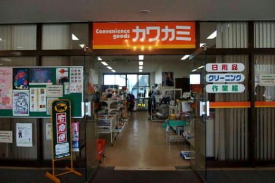
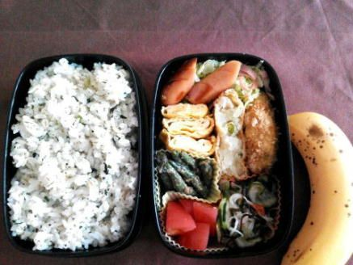

| 自衛隊のごはん 海上自衛隊 呉・佐世保編 | |
| 廣川ヒロト | |
| denmei shobou (2014) | |
自衛隊のごはん 海上自衛隊 呉・佐世保編
はじめに
シリーズ第三弾を迎えた今作は海上自衛隊編です。
取材先は、九州は長崎の佐世保地方隊と、広島の呉地方隊です。
当初、取材は佐世保のみの予定でしたが、とある御縁のおかげで呉地方隊にも取材させていただくことになりました。
食事は朝昼晩で、呉と佐世保で合計十三食、いただきました。
うち、艦艇（こんごう）での喫食が二回、潜水艦（いそしお）での喫食が一回です。
ほか、呉や佐世保の関係各所から食事画像を多数提供していただきましたので合わせて紹介します。
巻末には、護衛艦こんごう、潜水艦いそしお、呉基地業務隊より教えていただいたカレーのレシピを掲載しています。
なお、海上自衛隊の調理従事者の呼称については「調理員（長）」「給養員（長）」と二通りの呼び方がありますが、本書では「調理員（長）」で統一しています。
使用する電子書籍端末によってレイアウトに差異が生じます。ご了承ください。
プロローグ（抜粋）
プロローグを既読のかたは、第二章からご覧ください。
《取材の打ち合わせで佐世保地方隊へ行く》
佐世保地方総監部の広報係である長嶺三佐にコンタクトをとったのは、前作『自衛隊のごはん 航空自衛隊 芦屋基地編』を刊行してから一週間ほど経ってからだった。
取材の件について会って話がしたい、との私の要望に長嶺三佐は応じてくれ、博多から高速バスに乗り、一路佐世保を目指した。
（画像：佐世保地方総監部）
総監部の広報室に赴いて、広報係長の長嶺三佐と打ち合わせを行った。
私が準備した企画書には、海上自衛隊の食事を紹介した電子書籍を執筆したいので隊員食堂を取材させて欲しい、という趣旨が書かれていた。
長嶺三佐は、企画書を一読するとこう言った。
「海上自衛隊は、食堂が沢山あるんですよ。陸上基地にもありますし、艦艇の中にもあります。海上自衛隊の食事を取材するのであれば、艦艇の食事は外せないかと思います。しかし、実は総監部は、護衛艦への指揮権がありません。地方隊としては、後方支援を行っているに過ぎないんですよ。いちおう、船は探してみますが、どの種類の船で、というお約束はできません。あと、海上自衛隊は毎週金曜日のお昼はカレーがでます。なのでカレーに着目すると面白いかもしれません――」
《芦屋基地の中村三佐からの電話》
航空自衛隊の芦屋基地渉外室の中村三佐より連絡があり、航空幕僚監部に勤務していた頃に知り合った海上自衛隊の瀧口二佐というかたを紹介していただいた。
現在、瀧口二佐は呉基地業務隊の司令をしている。
取材先が二カ所になれば、内容が充実すると考えた私は、瀧口二佐に会うために広島の呉地方隊へと向かった。
基地業務隊司令の瀧口二佐、それから呉地方総監部の広報係長の阪本一尉を交えて打ち合わせを行った。
陸上施設の隊員食堂は業務隊の管轄になり、そちらの取材は可能だが、やはり艦艇での食事は難しい、との答だった。
阪本一尉いわく、呉は、潜水艦部隊があるから、潜水艦の食事を調整できればいいが、潜水艦は行動が公にされておらず、また、防衛機密の面でも内部に入るのは簡単ではない、とのことだった。
潜水艦での食事については「可能ならば」とお願いをして、私は帰途についた。
《海軍カレーを食べる》
佐世保地方隊の取材の前日、現地入りした私は、海軍カレーのお店を発見した。
なんとオーナーは海上自衛隊の調理員長ＯＢだった。長崎は軍港として栄えた歴史があるため、カレーに限らないが、軍事にまつわる飲食店も多い。
早速お店に入り、海軍カレーを注文する。
（画像：海軍カレー）
数分で海軍カレーがやってきた。
野菜と果物の甘みと、スパイスの辛みがブレンドされた、大人向けの味わいのカレーだ。
最初は甘みを感じるものの、食べているうちに辛さが徐々に強まってくる。
値段はランチの場合は五〇〇円で、昼以降は六〇〇円。
（画像：海軍カレー）
お店の壁には、海軍カレーの盛りつけのコンセプトが書かれてあった。
ご飯は日本国本土のイメージ。
カレーは海を表し、ジャガ芋は島。
キヌサヤは二隻の護衛艦で、錨型の人参は海軍のシンボル。
※お店は、残念ながら二〇一四年九月に閉店しました。
《佐世保史料館を見学》
海軍カレーを食べたあと、海上自衛隊佐世保史料館を見学した。
史料館の所在地は、佐世保市上町で、入館は無料ながら、館内の展示物は充実している。
七階から一階に下りていく形で、ルートに従って見学していけば、海軍創設から現在の海上自衛隊の活動までを知ることができる。
七階は展望ロビーと映像ホールで、六階は徳川幕府海軍から明治海軍の変遷などの紹介。
五階は、日清戦争、日露戦争当時の資料などが並べられている。四階は、主に太平洋戦争当時の資料などが展示。
三階では、海上自衛隊の創設からのあゆみ、歴代護衛艦の模型や航空機、制服などの紹介。二階は、海上自衛隊の任務や活動の紹介、資料閲覧室など。
一階では、時節に合わせた企画展示や、佐世保地方隊の史料などが展示されている。
それによると――
明治政府が佐世保に鎮守府を設置したのは、一八八九年（明治二二年）七月で、以来、日本の最も西を防備する根拠地として、朝鮮半島、南西諸島や台湾などを管轄した。
一九四五年の終戦によりアメリカ軍が進駐し、主要な建物は接収されることとなる。
五年後の一九五〇年六月、朝鮮戦争が勃発。
海上自衛隊の前身である海上警備隊が創設され、一九五四年七月に同組織は海上自衛隊へと発展改編された。
創隊当時、艦艇や装備は主にアメリカ軍から供与を受けていたが、徐々に国産化を進めていき、防衛力の強化に取り組んでいく。
ソビエト連邦崩壊後は、世界情勢に合わせて自衛隊の任務も多様化し、近年は国際貢献などの活動も頻繁に行われている。
史料館の一階、および二階部分は、旧海軍時代に将校の宿泊、福利厚生施設として利用されていた『佐世保水交社』の一部を修復、新館を増築している。
三階以上はガラス張りの現代的な造り。
愛称の「セイルタワー」は、屋上部の構造物が船の帆にも見えることからつけられている。
日暮れ近く、ホテルに戻り、その日は早めに就寝した。
早朝に目覚めて身支度を調え、ホテルを出た。時刻は午前六時前。天気は快晴。徒歩で、佐世保地方隊基地業務隊へと向かったのだった。
『自衛隊のごはん 海上自衛隊 呉・佐世保編 プロローグ』（抜粋）終わり
第一章 「以前はホテルの調理場で働いてました」佐世保基地の調理員長
《基地業務隊の隊員食堂は営舎内居住者のための食堂》
佐世保基地業務隊の警衛所に辿り着くと、広報係の女性自衛官が出迎えてくれた。
朝食に同行してくれるのは時枝菜津美海士長で、営舎内居住者にあたる。
（画像：広報係の時枝菜津美海士長）
基地や駐屯地の寮に住む隊員は営舎内居住者と呼ばれる。
結婚すると営舎外居住者となり、基本的には隊員食堂での喫食はできない。
あと、准尉及び三尉以上の幹部自衛官は独身でも営舎外居住者となるので、通常は隊員食堂（幹部食堂）での喫食は不可となる。
自衛官であれば、誰しもが無料で隊内で食事ができる訳ではない。
基地の外から通う営舎外居住者は、弁当を持参する隊員もいる。
また、基地内の厚生センターには民間の委託食堂や売店が入っており、そこで食べたり、弁当を購入したりもできる。
《男性隊員が立ち入ることのできない区域》
時枝士長に案内してもらって隊員食堂へと向かう。
「佐世保地方隊には、女性自衛官隊舎というのはあるんですか？」
（画像：佐世保基地業務隊営内隊舎入口）
「佐世保は、専用の隊舎はないんですよ。いま向かってるパークサイド平瀬という建物の一階に隊員食堂があるんですが、上の階は、営舎内自衛官隊舎として使われています。その一部の階が女性専用になっています」
「その一部の階には、男性は入れませんよね？」
「そうですね。男子禁制です」と時枝士長は頷いた。
ある人に「自衛隊基地の中の女子寮に男は入れない」と言ったところ「それは建前でしょう」との返答をもらった経験がある。
たとえば、ドラマや映画などフィクションの世界では、男子禁制の女子寮に男が忍び込む、というシチュエーションは珍しくはない。
だが、自衛隊の中の女性自衛官隊舎に関しては、有名無実的な欺瞞は存在しない。決まりで「男性が入れない」となっていれば、絶対に入れない。例外としては、点検などで、管理者たる上官（男性）が女性自衛官に付き添われて内部に入る場合はある。
もちろん、物理的には可能だから「絶対に」というのは言い過ぎかもしれないが、男子禁制に関しては本音と建前の部分は存在しないと思う。
（画像：営内隊舎一階の隊員食堂入口）
時枝士長は言う。
「エレベーターも二つあって、一つは女性専用ですね。階段の踊り場にはセンサーが設置されていて、不用意に足を踏み入れると警報が鳴る仕組みになっています」
営内隊舎の入口のすぐ左側が、隊員食堂入口となっている。
 （画像：佐世保基地業務隊の隊員食堂内部）
（画像：佐世保基地業務隊の隊員食堂内部）
食堂へと入った。
「けっこう......小さい食堂なんですね」
「基地業務隊の隊員食堂は利用者が多いときでも二〇〇人ぐらいなので小さいほうだと思います。佐世保教育隊にも隊員食堂があるんですが、そちらは学生が入校してますので、規模はこちらより大きいですね」
（画像：佐世保基地業務隊の隊員食堂内部）
佐世保地方隊の敷地がまとまっておらず、点在していることと、艦艇勤務の隊員は、艦艇の食堂で食べるので、基地業務隊の隊員食堂は利用者が少ないのだろう。
《基地業務隊の朝食はシンプル》
通常、配食はセルフだが、食堂内には、すでに時枝士長と私の分の食事が用意されていた。
ありがとうございます。
（画像：佐世保基地業務隊の隊員食堂の朝食）
内容は次の通り。
――――――――
・ごはん（鰺茶漬け）
・切り干し大根のはりはり漬け
・若布と豆腐としめじとネギの味噌汁
・赤貝味付
・乳酸菌飲料
――――――――
七六七キロカロリー
ほか、ワサビと刻み海苔の小パックが付属。
お茶漬けなので、トレイ中央の緑茶をご飯にかける。
（画像：佐世保基地業務隊の隊員食堂の朝食）
航空自衛隊の芦屋基地の朝食と比べるとシンプルかな、というのが正直なところ。
芦屋基地の初日の朝食は、
・ごはん
・油揚げの味噌汁
・レバー煮
・胡麻チキンサラダ
・ポテトベーコン
・生卵
・ミニ納豆
・牛乳
という豪華さだった。これで一〇〇〇キロカロリー超え。
自衛隊の食事は、あらかじめメニューが決まっていて、選択することはできない（たまに、選べる献立のときもある）。どうしても偏りが出てしまう。なのでたまたま質素なのかもしれない。
 （画像：航空自衛隊芦屋基地のある日の朝食）
（画像：航空自衛隊芦屋基地のある日の朝食）
テーブルの上にメニュー表があったので確認した。
朝食は平均七五〇キロカロリー程度で、時折八〇〇を超えるが、品目的にも質素なものが多かった。
参考までに前日の朝食は、
・ごはん
・ソフト稲荷
・たくあん漬け
・味噌汁
・黄金イカ
・コーヒー牛乳
これで七七一キロカロリー。
一昨日はパン食で、
・ロールパン
・コンソメスープ
・ハムソテー
・牛乳
・目玉焼き（付け合わせはレタス）
これで六六四キロカロリー。
朝食がパン食なのは、メニューを見る限り、週一回らしい。
日曜日の朝だけは既製品の菓子パンと飲み物のみで、月曜日から土曜日までは、調理した朝食のようだ。
《具沢山で麺が見えない塩ラーメン》
続いてお昼ご飯の紹介。
 （画像：佐世保基地業務隊の隊員食堂の昼食）
（画像：佐世保基地業務隊の隊員食堂の昼食）
内容は次の通り。
――――――――
・ごはん（小）
・竜田揚げ
・刻みキャベツ
・チンジャオロース
・豆腐のサラダ
・塩ラーメン
・牛乳
――――――――
一二五五キロカロリー
実は廣川はこれを食べていない。
初日の昼は、護衛艦こんごうで喫食したので、画像の食事は時枝士長の食べたもの。
艦艇の食堂とはメニューが違うので、紹介するのも面白いと考え、時枝士長に撮影してもらった。
塩ラーメンは、麺が見えないほどに具（チャーシュー、煮卵、小葱、もやし、メンマ、紅ショウガ）が敷き詰められていて、家庭的な雰囲気といってもいいだろう。
《夕食は、和と漢と洋の取り合わせ》
 （画像：佐世保基地業務隊の隊員食堂の夕食）
（画像：佐世保基地業務隊の隊員食堂の夕食）
内容は次の通り。
――――――――
・ごはん
・白身魚のムニエル
・レタス、キュウリ
・ニース風サラダ
・野菜炒め（味噌）
・ワンタンスープ
・リンゴジュース
――――――――
一〇七七キロカロリー
私は夕食は佐世保教育隊の隊員食堂で喫食したので、こちらも食べていない。
時枝士長の夕食となる。
ムニエルは、材料に小麦粉などをまぶしてバターでソテーした料理で、ニース風サラダは、ゆで野菜にフレンチドレッシングを和えたもの。どちらもフランス料理の系譜となる。
ワンタンスープが中華で、野菜炒め（味噌）が日本風と考えると、和漢洋料理といえるかもしれない。
《やはり朝食はシンプル》
こちらは、二日目の朝食。
 （画像：佐世保基地業務隊の隊員食堂の朝食）
（画像：佐世保基地業務隊の隊員食堂の朝食）
内容は次の通り。
――――――――
・ごはん
・里芋と豆腐とえのきとネギの味噌汁
・牛肉缶の炒め煮
・ホタテ中華
・たくあん漬け
――――――――
六三二キロカロリー
これぞ正統派、という趣の朝食だと思う。
物足りない、と感じる人もいるかもしれないが、私はちょうど良い分量だった。
（画像：佐世保基地業務隊の隊員食堂の喫食風景）
《季節のイベントに合わせた料理》
時刻は七時過ぎで、喫食しているのは四～五人程度だった。
時枝士長によると、朝食が混む時間帯は、六時四〇分前後らしい。
「時枝士長は、元々のマーク（職種）はなんですか？」
「私のマークは射撃です」
「射撃？ 射撃手という意味ですか？」
「撃つことはしません。艦艇の、速射砲とか機関砲、ミサイルなどの取り扱いと整備が主な仕事ですね」
「だったら艦艇に乗っていたんですか？」
時枝士長は頷いた。「いまは広報ですけど、以前は補給艦〝おうみ〟で勤務していました」
「陸上施設の隊員食堂と艦艇の食事は、どちらが美味しいですか？」
「どちらも美味しいですけど、あえていうなら艦艇のほう......かな。洋上にでると、どうしても食事が楽しみになってしまうのも関係しているかもしれません。あと、おうみの調理員長が、舞鶴の第４術科学校の調理の教官をしていたかたで、食事についてはこだわりを持っていらっしゃいました。クリスマスとか、節分とか、イベントに合わせた料理がでたりしていました」
「いいですね」
「基地業務隊の隊員食堂も、イベントに合わせた料理は出ますけど、艦艇勤務だと新鮮味が違いますね」
「業務隊の隊員食堂は、メニューは栄養士が考えているんですよね？」
「基本的にはそうなんですけど、いまは、栄養士のかたがいなくて、調理員長のかたが、栄養士もされているんですよ」
（画像：隊員食堂の調理員長兼栄養士の松田秀宣海曹長）
お話を聞きたい、とお願いして、栄養担当官兼調理員長の、松田秀宣海曹長に時間をつくっていただいた。
厨房の見学もしたので、適宜画像を挿入していく。
制服姿で現れた松田曹長は、丁寧な物腰の、自衛官らしからぬ、温厚な雰囲気の紳士だった。
（画像：松田秀宣海曹長）
「お忙しいところお時間をつくっていただき、ありがとうございます。――松田曹長が、栄養士もされているということで、メニューの作成もされているんですよね？」
「はい。いま、専属の栄養士が休職中でして、私は栄養士の免許も所持していますので、その代わりもやっています」
「メニューを作成する上での、工夫とかありますか？」
「自衛隊員は体力を使いますからまずはカロリーの確保です。それと栄養のバランスですね。あとは、食べる人の嗜好を満たすメニューを心がけています。若い隊員から、そうでない隊員まで幅が広いので、全ての嗜好を満たす、というのは難しいのですが、可能な限り皆が満足できるメニュー構成を配慮していますね」
「喫食人員は、一食あたりどのぐらいでしょう」
「少ないときは五〇～六〇人です。講習などで、他の部隊から人員が佐世保に集中する場合は、二〇〇名を超えるときもあります。基本的には、昼食の喫食人員が一番多いですね」
（画像：手前が松田秀宣海曹長）
《時枝士長の好きな食べ物》
「新しい献立がメニューに加わる場合もあると思うのですが、どんなふうに考えているのでしょうか」
「季節に合わせた食材をつかったメニューはよく考案します。適宜、嗜好調査、アンケートをとっていますので、その結果にもとづいて考えたりもします」
私は時枝士長に尋ねた。
「時枝士長の好きな食べ物はなんでしょう？」
「ちょっと言いづらいんですけど......」ちらりと松田曹長の顔を見る。
「ミルフィーユカツです。中にチーズが入っていて、豚肉で巻いたやつなんですけど。冷凍食品なので......」遠慮がちに言った。
「いや、けどいまの冷凍食品は美味しいですよね」私は応じた。
松田曹長は頷く。「確かに冷凍食品の味は昔に比べるとよくなっていますね」
（画像：厨房内部。ハンドルを回すと、鍋の角度が変わる）
《ボンファン？》
「メニューに松田曹長の趣味が反映される場合もあるのですか？」
「それはもう、よくありますね。私は、自衛隊に入る前はホテルの調理場で働いていたんですよ。フランス料理を作っていまして」
「だったら、フランス料理っぽいものが出たりもするんですか」
「はい。ボンファンとか......。けどメニュー表に、ボンファンと書いても、なんのこっちゃ分からないので、グラタン風とか名前は変えてますけど」
「ボンファンって、なんですか？」私は聞いた。
「煮込み料理とか、家庭的な、とかそんな意味があるんですが、簡単にいえばグラタンに近いですね」
松田曹長の温厚な人柄は、元ホテルマンという部分も関係しているのかもしれない。
（画像：厨房内部）
「一日あたりの予算はいかほどでしょうか」
「えっとですね......ちょっと確認してきます」松田曹長は身を起こし、奥の事務室へと消えた。
私は時枝士長に聞いた。「松田曹長って現場の長ですよね？」
「そうです」
「制服を着てるんですか？」
時枝士長は少し笑って、
「廣川さんが話を聞きたいといわれたから、制服に着替えられたんですよ。いつもは調理服です」
「申し訳ないことをしましたね......」
実はこのあと、厨房をみせてもらったので、松田曹長には短時間のうちに二回も着替えさせてしまった。松田曹長は嫌な顔ひとつせず、私の気まぐれな要望に応じてくれた。ありがとうございます。
松田曹長が戻ってきた。「一日あたりは定額が決まっていまして、八二四円です」
「予想より低予算なんですね。――調理員は、松田曹長を含めて何人いるのでしょう」
「私も含めて一〇名です」
（画像：カレーの付け合わせのゆで卵を作成中）
「栄養士のかたが休職されていて松田曹長がその代わりということですが、その......特別な手当は付くんですか？」
松田曹長は頭をかいた。「それが......つかないんですよ」
自衛隊の給食施設には、たいてい栄養士が勤務しているので、佐世保基地業務隊の隊員食堂はイレギュラーなのだと思う。
詳しくは聞かなかったが、恐らく一時的なものだろう。
お話のあとは、厨房内部を見学させてもらった。
厨房は、とても広々としており、清潔で、整理整頓がよくなされているとの印象だった。
《陸上施設の隊員食堂でも金曜の昼はカレー》
二日目の昼食については、私は護衛艦こんごうで食べたので、画像は時枝士長が喫食した食事となる。
（画像：佐世保基地業務隊の隊員食堂の昼食）
内容は次の通り。
――――――――
・ごはん
・挽肉カレー
・かに爪フライ
・ミックス野菜
・ゆで卵
・りんご
・らっきょう
・福神漬け
・牛乳
――――――――
一三四三キロカロリー
金曜日にカレーを食べるのは、洋上で曜日の感覚を忘れないため、というのが理由の一つだが、陸上施設の隊員食堂でも金曜日はカレーを食べる。
陸上自衛隊でも駐屯地によっては、金曜日とは限らないものの、カレーの日が定まっている場合がある。
《夕食はホイル焼き》
（画像：佐世保基地業務隊の隊員食堂の夕食）
内容は次の通り。
――――――――
・ごはん
・鮭のホイル焼き
・牛肉とアスパラ炒め
・棒々鶏サラダ
・コーンポタージュ
・牛乳
――――――――
八九六キロカロリー
例によって夕食は佐世保教育隊の隊員食堂で喫食したので、時枝士長の夕食となる。
ホイル焼きは、喫食人員が少ないから出せるメニューだろう。
《喫食人員の少なさがポイント》
佐世保基地業務隊の隊員食堂は、朝食はシンプルで、昼食が豪華なときは夕食が控えめ。
夕食が高カロリーの場合は、昼食が質素のようだ。
毎週金曜日の昼にカレーを食べる、という点は除くとして、海自だから何かが違う、という部分は発見できなかった。陸自や空自の食堂と大きな違いはないだろう。けれども、佐世保基地業務隊の隊員食堂は、喫食人員が少ない分、きめの細やかな対応ができるのでは、と感じた。
第二章 「献立は、肉と魚を交互に」佐世保教育隊の栄養士
《教育隊の食堂の献立は若者向けが多い》
佐世保教育隊は、新しく採用された自衛官候補生に対する基本教育訓練（五ヶ月間）、および、三等海曹に昇任予定の隊員の教育訓練を行っている。
場所は佐世保市崎辺町で、佐世保地方総監部からは五キロほどの距離がある。
 （画像：佐世保教育隊隊員食堂）
（画像：佐世保教育隊隊員食堂）
佐世保教育隊の隊員食堂は、見学した限りは、陸上自衛隊や航空自衛隊の隊員食堂とほぼ同じ、との印象だった。
佐世保教育隊補給科補給科長の大森衛一等海尉、給食係長の塚本浩一准海尉に話をきいた。
「隊員食堂で人気のあるメニューはなんでしょうか？」
塚本准尉が答えた。「カレーは人気がありますね。カレー以外だと、麺類ですね」
（画像：佐世保教育隊の隊員食堂入口）
大森一尉が引き継いだ。「いま、教育を受けている学生が、今年の春に高校を卒業、もしくは大学を卒業したばかりの若者です。教育期間中は体力を消耗しますし、そういう関係もあってか肉類の人気が高いですね。特に鶏の唐揚げなど。健康面に配慮して、肉ばかりではなく、野菜や果物も多く出すようにはしています」
（画像：夕食前に走り込みをする自衛官候補生）
「喫食人員は何名ぐらいですか？」
塚本准尉は言った。「平日は毎食、五〇〇名前後です。休日は、外出する隊員が多いので、一〇〇名程度まで落ちますね」
「五〇〇名というのは朝食もですか？」
塚本准尉は首肯した。「自衛官候補生は営舎内居住者にあたりますから、朝昼晩を隊員食堂で食べます」
（画像：配食台。配食については一部セルフサービス）
《食物アレルギー対策》
「――佐世保教育隊ならではのメニューがあれば教えてください」
大森一尉は首を傾げた。「特にないんですが、強いていうなら、皿うどん、ちゃんぽんでしょうか」
「長崎はちゃんぽんが有名ですね。――食物アレルギーのある隊員に対しての取り組みなどはあるのでしょうか」
大森一尉は答えた。「毎食ごとに、アレルギーについての情報は、配膳台に掲示しています」
（画像：配膳台）
「ということは、アレルギーのある隊員がいるんですか？」
「何人かいます。アレルギーのある隊員については、最初に個人面談などをします。教育隊の隊員食堂ではアレルギーの表示はしますが、他ではやっていないところもあります。私どもは、部隊配属後までは面倒を見ることができません。なので、自分でしっかりと注意しないと、命に関わる事態にもなるので、それをよく話し合いますね」
（画像：向かって左側が、佐世保教育隊給食係長の塚本浩一准海尉。中央が栄養士の北村晶子技官。右側で二人を見守っているのが、補給科長の大森衛一等海尉）
《金曜はカレー。木曜は麺類》
続いて、栄養士の北村晶子技官に話を聞いた。
「栄養士さんがメニューの作成をするとうかがっていますが、メニューを作成する上で心がけていることはあるのでしょうか？」
「そうですね。食べる人の立場になって考える、ということですね。肉や魚を交互に献立に取り入れながら、カロリーやビタミンの摂取量を満たせるよう気を配りつつ献立を考えています」
「色々な部分に注意を向けないといけないから難しいですよね。――曜日によってボリュームに変化があったりしますか？ たとえば週の初めはあっさりしたものが多いとか、金曜日は高カロリーだったり」
「ご存じかと思いますが毎週の金曜日のお昼はカレーです。木曜日は麺類が出ますが、それ以外では特に曜日によってメニューを変える、ということはありません。偏りのないメニューになるように調整はしています」
「金曜日にカレーを食べるのは艦艇だけだと思っていましたが、陸上施設の食堂でもカレーを食べるんですよね。基地業務隊も金曜日のお昼はカレーとお聞きしました。――人気のあるメニューはカレーなのはどこも同じだと思うのですが、逆に、残る場合が多いメニューは何がありますか？」
「最近の若い人は、魚をあまり好まないようですね。残る場合が多いです。何か工夫が必要だとは常々考えてはいます」
「どこも、魚は人気がないと聞きますね。――本日はお忙しいところありがとうございました」
《ＶＩＰ室で食べる自衛隊のごはん》
隊員食堂に併設のＶＩＰ室に私と、広報係長の長嶺三佐の食事が用意されていた。一〇名前後が喫食できるほどの広さで、会食などに使われるのだろう。
申し訳ない気持ちを抱きながら席につく。
時刻は一六時半。自衛官候補生たちは「補習」と称して隊員食堂の前の道路を駆け足している。
（画像：佐世保教育隊の隊員食堂の夕食）
内容は次の通り。
――――――――
・中華風炊き込みご飯
・カレー風味ムニエル
・キャベツの千切り、トマト
・ナスのしぎ焼き
・皿うどん
・スイートポテト
――――――――
一五二九キロカロリー
ナスのしぎ焼きは、ナスを油で揚げて、味噌で味を付けた料理。
ナスのみそ田楽ともいう。
全体的に量が多くて食べきれなかった。長嶺三佐は完食した。
参考までに、同じ日の昼食は、
・ごはん
・魚フライ（カレイ）
・豆腐の卵とじ
・野菜スープ
・オレンジ（二分の一）
これで、一一八八キロカロリー。
朝食は、
・ごはん
・豆腐と若布の味噌汁
・ホタテ中華
・目玉焼き
・ふりかけ
これで七四八キロカロリー。
続いて二日目の夕食。
 （画像：佐世保教育隊の隊員食堂の夕食）
（画像：佐世保教育隊の隊員食堂の夕食）
内容は次の通り。
――――――――
・ごはん
・ジャンロ煮
・キャベツの千切り
・ナポリタンスパゲティ
・コンソメスープ
・マッシュポテトサラダ
・野菜ジュース
――――――――
一一六三キロカロリー
ジャンロ煮というのは煮豚のこと。
昨日の夕食と比べるとボリュームは控えめ、といった印象。
参考までに同じ日の朝食は、
・ごはん
・焼き魚（めざし）
・豆腐ととナスと揚げの味噌汁
・糸コン煮
・ふりかけ
八三四キロカロリー。
昼食は、
・ごはん
・ポークカレー
・ポテトコロッケ
・らっきょう
・福神漬け
・牛乳
・メロン
これで一四一九キロカロリー。
《艦艇勤務の幹部が様々な部署を渡り歩くことの意味》
早々と完食した長嶺三佐は、少し物足りなさそうだった。
「長嶺三佐は、昼食はいつもはお弁当ですか？」
尉官以上の自衛官、および既婚者は営舎外居住者となり、基本的には隊員食堂での喫食はできない。
「そうですね。昼は弁当で、夜は官舎に帰ってから食べます。船に乗っている時は船の中で食べますが」
（画像：ある日の長嶺三佐のお弁当）
「長嶺三佐はずっと広報の仕事をされている訳じゃないんですよね？」
「自分はマーク（職種）は艦艇なんですよ。専門は水雷ですけど」
「水雷というと、魚雷ですか？」
「そうです。魚雷などの水中武器系の取り扱いです。ソーナーで、潜水艦の捜索などもしますね」
「どんな船に乗っていたんですか？」
「呉で〝とね〟の砲雷長をしていました。その前は〝すずなみ〟の水雷長です。艦艇勤務ばかりで、広報の仕事はこれが初めてなんですよ」
「本で読んだんですが、海上自衛隊の艦艇勤務の幹部は、色々な部署を少しずつ覚えるらしいですね」と私は尋ねた。
「そうですね。一般幹部候補生を修業した艦艇乗り組み幹部は、最初の三年間は、専門関係なく様々な部署を経験します。そのあと、専門が決まります」
「ある本によると、護衛艦は、戦闘で人員に欠員が出たりして、たとえばひとつの部署が全滅したときに備えて、機器の取り扱いの分かる幹部を分散させている、というふうに読んだんですが、本当ですか？」
少し長いが『兵士に聞け』（新潮社）杉山隆男著から引用する。
護衛艦の若手士官が仕事の中身をくるくるかえさせられるのにはむろんわけがある。それは、護衛艦が敵からの攻撃をうけてたった一人の士官しか生き残っていないという事態になってもなお艦を動かし兵を率いて戦うことができるようにしておくためである。戦闘部署の士官が全滅する中、たとえ航海長や機関長だけが難を逃れても、その彼らがミサイルや魚雷の扱いをまったく知らないというのでは戦闘の指揮をとる人間がいなくなってしまう。逆に兵器関係の士官が生き残っても、船の操り方が分からないようでは護衛艦は艦隊からはぐれて洋上をさまようことにもなりかねない。つまり士官の中の誰が敵弾に斃れても、ただちに生き残った士官が代役をつとめられるように、護衛艦の士官はある程度「何でも屋」であることが求められるわけだ。
『兵士に聞け』（新潮社）杉山隆男著二二〇ページより
長嶺三佐は一瞬考え込んでから口を開いた。「確かにそういう事態に備えている部分もありますが、艦長になったとき、たとえば機関や航海などの部署のことが分からないと......配慮ができないですよね。艦長は、艦全体を把握しないといけないので」
「なるほど。そんな理由もあるんですね」
（画像：佐世保地方総監部広報係長の長嶺哲郎三等海佐）
長嶺哲郎三等海佐の出身は、福島県会津若松。
二〇〇二年（平成一四年）三月に江田島の海上自衛隊一般幹部候補生学校（Ⅱ課程）に入校し、卒業後は、主に艦艇にて勤務。
二〇一三年（平成二五年）三月より佐世保地方総監部の広報係長となった。
「広報の仕事は、あと一年ほどですね。また艦艇勤務に戻る予定です」
《体力徽章は陸海空共通》
私は、長嶺三佐の制服の左胸を見た。
「それ、体力徽章ですよね？」
「はい。一級......です」
 （画像：長嶺三佐。上が体力徽章。下は水上艦艇徽章）
（画像：長嶺三佐。上が体力徽章。下は水上艦艇徽章）
体力検定は、年に一回実施される。
腕立て、腹筋、三キロ走などの種目で基準値をクリアすると、体力検定一級として認定され、徽章をつけることができる（一年間）。
体力徽章自体は、陸上自衛隊や航空自衛隊にもある。海上自衛隊の場合「水泳」の種目が追加される。
巻末の付記一に海上自衛隊の一級合格基準の表を記したので、興味があるかたはご参照ください。
陸上自衛隊の場合、個人的な所感として述べると、体力検定一級は化け物クラス（並外れた体力の持ち主、という意味）。
三級以上であれば、周囲から「体力がある」と認められるだろう。
普通科連隊に行けば、そんな隊員がゴロゴロいるが後方職種だとほとんど見かけない。
普通科の隊員は、体力徽章は、戦闘服に縫い付けるのが面倒だからつけない、という例も多いと思う。
水上艦艇徽章については、海技士資格に準じた運航や機関の海技試験に合格し、かつ水上艦艇の勤務が四年を超える隊員に授与される。幹部用は金色で、曹士用は銀色となる。
第三章 「ドッグフードを食べた経験はないです」佐世保警備隊の警備犬係
《陸警隊長の先導で訓練所へ向かう》
佐世保教育隊の敷地の中には佐世保警備隊があり、警備犬を保有している。
食事とは関係ないが、警備犬の訓練展示を見学したので、紹介したいと思う。
警備犬の訓練施設は教育隊敷地の奥まった場所にあり、長嶺三佐も行った経験がないという。
官用車で向かったが、何度か道を間違ったりして、ストレートには辿り着けなかった。
通りかかった海士に長嶺三佐が道を尋ね、その方向へと進んでいく。すると、自転車にまたがった大柄な幹部自衛官が待っていた。
「警備隊の陸警隊長ですね。迎えにきてくれたみたいです」長嶺三佐が言う。
自転車は、官用車を先導して、細い道を進んでいく。
（画像：警備犬訓練所）
辿り着いた先は、フェンスに囲まれた警備犬訓練所だった。
車を降りると、デジタル迷彩服姿の隊員がフェンスのなかから出てきた。
先導してくれた陸警隊長が責任者だろう。私はまず陸警隊長の一等海尉のかたに名刺を渡そうとした。
「佐世保警備隊、陸警隊長の武富政英と申します。あ、わたし、名刺をきらしてまして......」
すかさず、デジタル迷彩服の隊員が進み出た。
「わたしので良ければどうぞ！」
名刺には、光田裕治一等海曹とある。
武富一尉はホッとした表情を浮かべた。
現場の長は光田一曹らしい。ほかの隊員は海士ばかりだった。いや、実は一人、二曹の階級章をつけた隊員がいたが、裏方というか、ちょっと下がったところからデジカメで写真をバシャバシャと撮っていた。佐世保警備隊の、広報係のような隊員かもしれない。
（画像：檻の中の警備犬）
まずは、訓練所に併設の犬舎へと案内してもらった。
光田一曹が言う。「うちは、空自の芦屋基地ほど立派な犬舎がなくて、お恥ずかしい限りです」
芦屋基地の犬舎は、しっかりとした建物で、空調設備まで整っていた。
佐世保警備隊の犬舎は、屋根はあって雨露はしのげるが、密閉された建物ではなく、開放型のガレージに似た造りで、訓練所に面していない三方向はフェンスが張られているのみだった。
（画像：光田一曹に連れ出される警備犬のスパーク）
檻の中の警備犬を見ながら光田一曹は口を開いた。
「若いのは、一歳三ヶ月で、上は五歳です」
「どれも大きいですね」
「オスばかりなので大きくなりますね」
光田一曹が二匹の警備犬を檻から連れだし、訓練場へと連れて行く。
（画像：徳留幸志郎海士長と警備犬のボルト）
服従訓練は、基本の訓練で、担当者に対する信頼と服従の性質を養い、警備犬としての必要な基本動作を習得させるのが目的となる。
内容は、ハンドラーに合わせての行進や停止、伏臥など。
続いて、障害訓練。内容は、高所通過、トンネル通過、幅跳び、障害物の飛び越えなど。運動神経の発達、筋力や精神力の鍛錬、警備犬の行動範囲を広げる効果がある。
（画像：防衛訓練。手前は光田一曹。奥が徳留士長と警備犬のボルト）
防衛訓練は、建物警戒、ハンドラーの防護、不審者に対する捜索や監視、襲撃など。
光田一曹が鞭を地面に叩きつけると、犬舎の犬たちが興奮したように吠え立てた。
徳留士長の合図で、警備犬は光田一曹に向かって駆け出す。
（画像：光田一曹に襲いかかるボルト）
ひるむことなくボルトは光田一曹の腕に噛みつく。
災害救助訓練は、災害時において、自力で脱出が不可能な被災者を捜索し、発見すると、その場で吠えて知らせるよう訓練されている。
（画像：警備犬スパーク）
《官品ハーネスをつけると犬も訓練に身が入る》
光田一曹は言う。「ハーネスをつけると、犬も分かるらしくて訓練に気合いが入ります」
「犬でもちゃんと理解しているんですね」
（画像：撮影前、光田一曹（右端）が冗談を飛ばして場を和ませる）
「海上自衛隊は、呉地方隊に本格的な警備犬の訓練施設があって、年に二回ほど集合訓練で行きます」
「航空自衛隊では、入間基地が本場ですが、海上自衛隊は呉、という訳ですね」
「そうですね。ちなみに航空自衛隊とも交流はあるんですよ」
「そうお聞きしています。――犬の種類は、シェパードのみですか？」
「そうです。民間からの購入です。一般入札ですね。基礎的な訓練が終わってから、こちらの施設に連れてきます」
（画像：改めて。右から、警備犬飼育管理担当者の光田裕治一等海曹。右から二番目が、徳留幸志郎海士長。右から三番目が、宮原卓也海士長。左側は、林佑一郎一等海士）
「警備犬の食事は、一日に何度とか決まりがあるのでしょうか」
「基本的には二回ですが、訓練の内容によっては一度にまとめたりもします。餌の量は、体重によって変わりますね」
「クリスマスとか、お正月とか、季節のイベントに合わせた食事とかはあるのでしょうか」
「ありませんねえ」光田一曹は残念気味に言う。
「たとえば犬の誕生日にビーフジャーキーを食べさせたり、という変化もないのでしょうか」
「ないですねえ」光田一曹は両手を掲げて、自らの胸に置く。「キモチダケ。ワタシタチノ、キモチダケ」なぜか片言の日本語で言った。
（画像：警備犬スパーク）
《ドッグフードのいまと昔》
「犬の年齢に応じて、餌の種類は変わるんですよね？」
「そうですね。餌は二種類ありまして、成犬用と老犬用です。犬の体調によっては、餌を水でふやかしたりします」
「ハンドラーのかたは、犬の餌を味見として食べたりするんですか？」
「食べませんね」光田一曹は即座に否定した。「人間が食べても少量なら害はないはずですが、あくまで犬用で、人間が食べるものではないので、ハンドラーがドッグフードを食べることはありません」
「どこで、とは言いませんが、実はですね、私はドッグフードを食べたことがあるんですよ」私は声を潜めた。
「あー、そうですか。味はどうでした？」光田一曹は瞳をキラキラと輝かせた。
「......あまり、美味しくはありませんでした。魚系です」
「味はですね、昔に比べるとずいぶん良くなってるんですよ」嬉々とした表情で光田一曹は言った。
誰かがぽつり「食べてるやん......」と突っ込みを入れた。
光田一曹は気を取り直し、「......あくまで人づてに聞いた話です。ということで、ハンドラーはドッグフードを食べたりはしません」
（画像：警備犬之碑）
《警備犬の最期》
「分かりました。食べない、ということで。――警備犬が、老犬になったら、どうするのでしょう？」
「任務から外します。それまで頑張ってくれたので、最期までこちらで面倒を見ますね」
「安楽死とかはない訳ですね」
「安楽死をさせる、という話はきいた経験はないです。自衛隊では、警備犬を最期まで世話をします」
「警備犬のお墓とかあるんですか？」
陸警隊長の武富政英一等海尉が答えた。「あります。ここから少し離れたところなので、いまから案内します」
武富一尉によれば、有志の募金によって建立された、とのことだった。
海上自衛隊の警備犬は軍用犬というよりは、警察犬に近いと感じた。航空自衛隊の警備犬と、大筋では同じだろう。
第四章 「オープンは四四年前」佐世保倉島厚生センターの喫茶フェニックス
《お勧めは、さわぎりの「牛すじ入りイカ墨カレー」》
陸上自衛隊の駐屯地や、航空自衛隊の基地には委託売店や委託食堂、理髪店やスポーツ店などが入った厚生センターが設置されている。たいていは一カ所にまとまっており、昼休みや十七時以降は、買い物をする隊員で賑わう。
海上自衛隊の佐世保地方隊は、総監部のある地域と、教育隊の所在地、それから艦艇が係留される場所など複数箇所に分かれているため、厚生センターもそれに合わせて分散している。
全てを回ることはできなかったので、一部の厚生センターのみになってしまうが紹介したい。
まずは総監部のある平瀬地区の厚生センターから。
案内は、共済係の岡部綾子さんにしていただいた。
（画像：平瀬売店入口）
厚生センターを入るとすぐに売店の入口がある。
『Convenience goodsカワカミ』
菓子や飲料、インスタント食品、文房具などのほか、制服などの被服も販売している。
コンビニというよりは、個人商店の雰囲気に近い。
当然ながら、自衛隊関連商品は豊富にある。
（画像：平瀬売店のお土産品）
レジ前のワゴンにはお土産品が販売されている。
『よこすか海軍カレー』（二食入り九〇〇円）や、第一回ＧＣ１グランプリ優勝の護衛艦さわぎりの『牛すじ入りイカ墨カレー』（五〇〇円）も販売中。
広報係長の長嶺三佐いわく「お勧めは、第一回ＧＣ１グランプリで優勝した護衛艦さわぎりの『牛すじ入りイカ墨カレー』です！」
ＧＣ１グランプリについて詳しく知りたいかたは付記三を参照ください。
（画像：お食事の店一善の日替わりランチ）
《十五種類を超える日替わりのローテーション》
売店の隣には、『お食事の店一善』という委託食堂が入っている。
営舎外居住者の自衛官が利用するお店となる。
オーナーの福田真紀さんに簡単ながらお話をうかがった。
「営業時間は何時から何時まででしょうか？」
「お昼は、午前九時から、午後二時までです。夜は、午後五時から午後九時までですが、予約がない限りはお店は開けません」
（画像：お食事の店一善店内）
「基本的に営業はお昼だけなんですね」
「そうですね。平瀬の総監部は、営舎外居住者のかたが多いので、夜は開店休業状態になりますので」
「なるほど。――お食事の店一善さんは、オープンしてから何年目でしょうか」
「今年で二六年になります」
「長いですね。――人気メニューを教えてください」
（画像：お食事の店一善のメニュー表）
「人気メニューは五〇〇円の日替わりですね。平日のみの営業で、十五種類以上あるので、毎日食べるかたでも、三週間は同じメニューを食べない計算になりますね」
「日替わりは、どんなものがあるんですか？」
「とり天、ミックスフライ定食、豚のしょうが焼き、カルビ丼、煮込みハンバーグ......などですね。ちなみに金曜日は、カレーライスです。今週はカツカレーです」
「委託食堂さんも金曜はカレーなんですね。――このお店は、自衛隊の人だけしか食べられないんですか？」
「基本的にはそうですが、たとえば基地内の工事関係の業者さんも来られますね。一般のかたが、食事のためだけに来店される、ということはありません」
店内での食事のほか、お弁当の販売もしている。
日替わり弁当は四〇〇円で、量が控えめなタイプは三四〇円。
（画像：佐世保造修補給所）
《米軍施設内の厚生センター》
続いて立神地区の厚生センターの委託売店。
総監部からは車で数分の距離にある。
売店は佐世保造修補給所の一階に位置している。
こちらは米海軍施設内で、敷地内にはマクドナルドも営業しており、円のほかドルでも購入できる。サイズはアメリカ本土と同じ。
（画像：立神厚生センター入口）
売店以外に理容店なども営業している。
制服販売のお店もあるが、午前中の早い時間だったため、営業時間外だった。
売店は、菓子類、飲料などのほか、教範も販売している。
教範は一般向けの販売は行っていない。
（画像：立神厚生センターの売店）
お店の人によれば客層は、自衛隊関係者が八割で、残りの二割が来隊者らしい。
午前中の早い時間のためか、店内にお客さんはいなかった。
営業時間は、朝は七時から夜は十八時まで。
艦艇勤務の自衛官が、出航前に色々と買いだめするのだろう。
アルコール類も販売しているが、贈答用や、家飲み用とのことだった。
「艦艇では、お酒は飲めるんですか？」長嶺三佐に聞くと、「船の中では飲めないですね。航海から帰ってきてから、陸で飲み会をする、というのはよくあります。一緒の船で勤務していると、寝食を共にしますから、連帯感というか、家族意識みたいなものが高まりますね」
（画像：倉島庁舎入り口）
《オープンして四四年目の老舗喫茶》
倉島岸壁は、ＪＲ佐世保駅の南に位置し、毎週土曜日と日曜日に艦艇公開を実施している。
倉島庁舎一階には、売店と喫茶店がある。案内はこちらも、共済係の岡部綾子さんにしていただいた。
（画像：喫茶フェニックス店内）
オーナーの山口鼓さんにお話をうかがった。
「フェニックスさんは、オープンして何年経つのですか？」
「四四年です」
「......四四年前というと、一九七〇年......昭和四五年ですか？」
「そうです」
航空自衛隊の芦屋基地の委託食堂「エスカルゴ」はオープンして三〇年で、十分に古いと思っていたが、軽々とレコードを塗り替えてしまった。
元々は山口鼓さんの母が経営していて、お店を受け継いだ形となる。
（画像：喫茶フェニックスのメニュー）
「営業時間を教えてください」
「午前一一時から、十七時までです。かつては夜も営業していて、お酒も出していたんですが、いまは車で来られるかたが増えましたのでお酒の取り扱いはやめました。夜に関しては、予約が入れば開けるようにしています」
（画像：喫茶フェニックスのカレー。目玉焼きとサラダ付き）
「時代の移り変わりというやつですねえ。――フェニックスさんで人気のあるメニューを教えてください」
「お食事だと、カレー、ミックスサンド、高菜チャーハン、日替わり定食......ですね。飲み物では、ミルクセーキやバナナジュースなどがよく出ます」
ミルクセーキを注文した。甘さが控えめで飲みやすい味だった。
（画像：喫茶フェニックスのミックスサンド）
共済係の岡部さんが言う。「私も時々利用するんですけど、ミックスサンドはよく食べますね」
昔に比べるとお客さんが減少している点については、喫茶フェニックスに限らず、自衛隊施設内の厚生センターはどこも同じかもしれない。
いまは、外出の規則などが緩やかになっている点なども関係しているだろう。
（画像：倉島庁舎内の売店）
続いて委託売店。
こちらの営業時間は、一〇時から一七時半まで。
ほかの委託売店同様の品揃えだが、お土産の自衛隊関連商品が豊富との印象だった。
自衛隊関係者は、自分が乗り込んでいる船に関するグッズをよく購入するらしい。
（画像：倉島売店の自衛隊グッズ）
《広報係長「海自之湯」にひとこと》
お土産で人気があるのは『よこすか海軍カレー』と海上自衛隊限定の『九十九島せんぺい』
長嶺三佐が興味を示したのは、海上自衛隊の護衛艦をモチーフにしたキャラクター入浴剤『海自之湯』
四種類あって、
護衛艦〝ひゅうが〟はレッドペッパー。
護衛艦〝こんごう〟はグレープフルーツ。
護衛艦〝むらさめ〟はすみれ。
潜水艦〝そうりゅう〟はミント。
パッケージには、それぞれキャッチコピーがあり、こんごうは「ヒトナナマルマル 入浴始めッ！」
長嶺三佐は「艦艇勤務は、十七時には......風呂には入らないね」と、独り言を呟いていた。
（画像：崎辺厚生センター入口）
最後は、佐世保教育隊の厚生センター。
厚生科長の津田事務官に案内していただいた。
立神や倉島の厚生センターは、建物を間借りしている形だが、崎辺の厚生センターは、先の二つに比べると立派な印象だった。
陸自や空自の厚生センターに近いだろう。
（画像：崎辺委託売店）
まずは売店から。
教育隊があって学生が多いので、菓子類が充実しており、また、入隊式などの関係で家族のかたなども来基するため、お土産品も多く販売されていた。
お店の人はお昼休憩のために不在だった。
（画像：博多屋食堂の店内）
続いて、委託食堂の「博多屋食堂」
オーナーの原隆則さんにお話を聞いた。
「博多屋食堂さんは、オープンして何年目でしょうか」
「二六年目ですね」
「博多屋食堂さんも長いですね。――営業時間を教えてください」
「朝は八時半からで、十三時までです。夜は営業していません」
（画像：博多屋食堂の店内）
「人気メニューを教えてください」
「日替わりですね。それ以外だと、だいたいまんべんなく注文は入るんですが、あえて挙げるとすれば唐揚げなどがよく注文が入ります」
（画像：博多屋食堂オーナーの原隆則さん）
「こちらのお店は、教育隊の学生さんは利用するんですか？」
「いえ、一般の隊員さんばかりですね。営舎外居住者のかたで、お弁当を持ってこないかたが食べに来られます。あと、お弁当も販売しています」
自分の経験で恐縮だが、教育期間中は、指定された食事以外を口にする機会はなかった。お腹が減ったときは、売店で購入したお菓子やインスタントラーメン、自販機などを利用していた。
（画像：スタミナ弁当。三〇〇円）
なんとお弁当は三〇〇円で販売している（ノリ弁当は二五〇円）。
長嶺三佐は、値段を聞いて驚いた様子だった。
確かに内容やボリュームを考えると破格の値段だと思う。
（画像：ノリ弁当二五〇円）
一部のメニューを紹介する。
・日替わり定食 四〇〇円
・カツ定食 五一〇円
・から揚げ定食 五一〇円
・カツ丼 五〇〇円
・親子丼 四五〇円
・カレーライス 四二〇円
・カツカレー 五三〇円
・ちゃんぽん 四二〇円
・焼きそば 四二〇円
・丸天うどん 三一〇円
・素うどん 二四〇円
（画像：三〇〇円のお弁当）
何か料理を注文したかったのだが、諸事情があって叶わなかった。
「博多屋食堂」は、航空自衛隊芦屋基地の委託食堂「エスカルゴ」と通じる部分があると感じた。
ボリュームがあって、かつ美味。加えて安価、といった趣のお店だった。
第五章 護衛艦こんごうと、ある米海軍提督のつながり
《こんごうで昼食を食べるため、米海軍佐世保基地に行く》
護衛艦こんごうが係留されている立神岸壁は、米海軍の敷地内に存在する。
昼食はこんごうで喫食するので、それに合わせて艦内見学も調整していただいた。
広報係長の長嶺三佐運転の官用車にて、米海軍佐世保基地へと向かう。
話では聞いていたが、米軍施設への入場は、厳重なチェックが行われる。ちなみに出る際は、ほとんどノーパスに近い。
前述したが、ゲートを抜け基地内に入るとすぐにマクドナルドがあり、円、もしくはドルで購入できる。サイズはアメリカ本土と同じ。
（画像：弓張展望台から撮影。手前は、米海軍第７艦隊所属の強襲揚陸艦ボノム・リシャール。奥の二隻、右側が護衛艦こんごう、左側が護衛艦あしがら）
マクドナルドを通り過ぎ、しばらく進むと、左手の岸壁に、巨大な艦船が係留されているのが目にとまった。
長嶺三佐が言う。
「あれは米海軍の強襲揚陸艦ボノム・リシャールです」
「強襲揚陸艦？ ほとんど空母ですね」
私は艦橋を見上げながら言った。まるでオフィスビルが横倒しになっているような質感だ。
全長は二五七メートル。満載排水量は四万トンを超える。
「空母に近いですね。垂直離着陸機のハリアーⅡを六機、搭載しています。三千人ほど乗員がいるので、佐世保に入ってくると街が賑やかになりますよ」
確かに佐世保市街は、外国人向けの店が多い。
私が泊まったホテルの隣は、外国人向けのバーだった。
（画像：護衛艦こんごう）
《当直隊員の出迎えを受ける》
ボノム・リシャールを横目に見ながら立神岸壁へと進む。
官用車から降りると、長嶺三佐とともに搭乗タラップへと向かった。
（画像：こんごうの当直の隊員）
乗艦すると、当直の隊員の出迎えを受けた。
ちなみに海上自衛隊の幹部自衛官の革靴は白で、海曹以下は黒となる。
右側の三曹のかたが、海上自衛隊らしい敬礼かと思う。
ちなみに左側の二尉のかたは長嶺三佐と同様、体力徽章をつけていた。
（画像：こんごうのプレート）
当直のかた、及びミサイル士の廣井将司三等海尉に案内してもらい、艦内へと足を踏み入れた。
こんごうは、就役が一九九三年三月で、二〇一三年には、二〇周年を迎えている。
その割には、艦内は清潔に保たれていて、ペンキが剥げている箇所などは見当たらなかった。
（画像：こんごうの水雷長で、広報係士官の小畑三佐）
《護衛艦こんごうの説明》
食堂へと通され、こんごうの水雷長で、広報係士官の小畑三佐から、当艦についてのブリーフィングを受けた。
それによると――
こんごうは、第１護衛隊群に所属しており、司令部は神奈川県横須賀に所在。
第１護衛隊群の所属艦艇は、横須賀と佐世保の港に分散配備されている。
（画像：こんごう艦内。任務行動や教育訓練などの優秀艦としての賞状が並ぶ）
こんごうは、イージス艦の一番艦として一九九三年（平成五年）三月に就役した。
二番艦きりしまは一九九五年三月に就役。
現在、海上自衛隊は、こんごう、きりしまの二艦以外に、みょうこう、ちょうかい、あたご、あしがら、と計六隻のイージス艦を保有している。
こんごうの艦長は清水博史一等海佐。先任伍長は田中貴幸海曹長。
（画像：こんごうの性能要目）
こんごうの命名の由来は、大阪府と奈良県の県境にある金剛山から。日本の保有する艦艇の名前としては、当艦は三代目となる。
性能要目は画像を参照いただきたい。
発電力は七五〇〇キロワットで、これは一万世帯、四万人相当の使用電力をまかなえる規模だという。
（画像：こんごうの艦内編成）
続いて、艦内編成の説明を受けた。
大きくは四分隊に分かれており、第一分隊が砲術や水雷などの火器関係。
第二分隊は、電測、通信、航海、気象に関する業務。
第三分隊が機関科で、エンジン、電気、水、空調などを担当。応急工作は、艦内で浸水や火災が発生したときに対応する。
第四分隊は、補給、経理、調理、衛生関係となる。
主要装備については、様々な媒体で詳しく説明されているので、ここでは簡単な紹介に留めたい。
五四口径一二七ミリ単装速射砲を一門、
ハープーンＳＳＭ 四連装発射機二基、
六八式三二四ｍｍ三連装短魚雷発射管二基、
Ｍｋ１５ Ｍｏｄ２ 高性能二〇ｍｍ機関砲(ＣＩＷＳ) 二基、
ＳＰＹ１Ｄレーダーを搭載しており、これは多数の目標の同時探索、探知、追尾、および発射されたミサイルの追尾、誘導などが可能な多機能レーダーとなる。
艦艇の上部構造物に四枚設置され、全周半球空間の捜索が可能。このレーダーと、火器管制システムが合わさって、イージス艦となる。
（画像：こんごう艦内。プレートは、術科競技会などで獲得したもの）
こんごうは海上自衛隊に配備された初のイージス艦で、アメリカ海軍以外が初めて保有したイージス艦でもある。
また、同艦は弾道ミサイル対応の改造艦で、アメリカで実施されたＳＭー３による迎撃試験に成功している。
《ベースは、アーレイ･バーク級ミサイル駆逐艦》
脱線になるがイージス艦こんごうについて調べていると、色々と興味深い繋がりなどを発見できたので紹介したい。
こんごうの船体は、アメリカ海軍のアーレイ・バーク級ミサイル駆逐艦がベースとなっており、これに日本独自の設計が追加されている。
アメリカ海軍ではアーレイ・バーク級ミサイル駆逐艦は量産型的な位置づけだが、海上自衛隊においては、艦橋に群司令用の設備を組み込むなどの改良が加えられ、旗艦としての能力も有し、排水量もベースのアーレイ・バーク級を上回っている。量より質に重きをおくのは、日本の伝統かもしれない。
さておき、艦艇の名前の付け方は、各国で異なっている。
かつての日本海軍は、戦艦なら旧国名（例：大和、山城、扶桑）、重巡洋艦なら山の名前（例：霧島、榛名、比叡）から付けられた。
航空母艦は、神話などに出てくる空を飛翔する霊獣（例：飛龍、大鳳、雲龍）などから。
巡洋艦は河川の名前（例：利根、筑摩、長良、神通）で、駆逐艦は、天象や気象（例：時雨、五月雨、雷）、ならびに季節に関係している語句（例：吹雪、雪風、秋月）などから。
空母赤城は、元々は巡洋戦艦として発注されたが後に航空母艦へと改装されたので、艦名は山の名前となっている。金剛も、当初は巡洋戦艦で、改装後に戦艦へとクラスチェンジしているため、山の名前で国名ではない。
アメリカ海軍の場合は、都市名や古戦場、歴史的に功績のあった人名などから名付けられている。一般的には、こちらの命名方式が世界標準だろう。
ただ、艦名の名付けの法則性については、時代によっても変わるので、この限りではない。
こんごうのベースとなったアーレイ･バーク級ミサイル駆逐艦は、人名から付けられている。
アーレイ・アルバート・バーク提督はアメリカ海軍の軍人で、最終階級は大将。アメリカ海軍史上でただ一人、海軍作戦部長を六年にわたって務めた。
〝部長〟というと、一部署の長のように聞こえるが、事実上は制服組のトップで、日本語訳としては「海軍作戦総長」という表記もある。
《日本の勲章ただひとつを胸に飾り埋葬された米海軍提督》
バーク提督は、一九〇一年（明治三四年）十月十九日、コロラド州ボルダー市近郊の農家に生まれた。
一九一九年（大正八年）に海軍兵学校に入校し、一九二三年、少尉に任官する。戦艦アリゾナ、巡洋戦艦チェスターなどに乗り込み、艦艇勤務を経験した。
太平洋戦争時には前線行きを熱望し、南太平洋にて駆逐艦隊を率いて日本海軍と戦った。
九四歳のとき肺炎を患い、一九九六年一月一日にワシントン郊外にあるベセスダの海軍病院にて息を引き取った。
バーク提督の死は『ワシントンポスト』の一面で報じられ、海軍兵学校のチャペルで行われた葬儀には、クリントン大統領や、海軍長官、海軍作戦部長、各界の著名人や、兵学校時代の同期、戦友たちが出席した。
参列者の中に、少数ながら日本人もいた。
海上自衛隊を代表しては、元海上幕僚長の石田捨雄氏の姿もあった。石田氏は、バーク提督が海軍作戦部長を務めていたときにワシントンで防衛駐在官として勤務しており、その関係で長年の交流があった。
石田氏は、葬儀の前、海軍病院近くで行われた通夜にも出席している。エスコート・オフィサーに案内されて棺の前に立った石田氏は、バーク提督の胸に真っ赤な綬がついているのを見る。それは、一九六一年に日本政府がバーク提督に送った勲一等旭日大綬章だった。提督の胸には他の勲章は見当たらない。
棺のそばにある台の上には、アメリカ政府や諸外国から授与された勲章がずらりと並べてあった。
石田氏が副官に聞くと「日本の勲章を胸につけるのはバーク提督の遺言によるものです」とのことだった。
翌日の葬儀では棺の蓋がしまっており、バーク提督の胸に勲一等旭日大綬章がついたままだったのかどうか、石田氏には確認できなかった。
『海の友情 米国海軍と海上自衛隊』（中公新書）の著者である阿川尚之氏は、このあとほどなく、ワシントンの海軍博物館を訪れている。
バーク提督に関する展示には、各国の勲章が並んでいるが日本の勲一等旭日大綬章だけが抜けていたという。だから、ともに葬られたのだろう。
葬儀が終わったあと、バーク提督の棺は六頭の黒馬が引く柩車で墓地まで運ばれた。葬列にはミサイル駆逐艦「アーレイ・バーク」の乗員も参加した。
棺は地中に埋葬された。十九発の弔砲が響いた。低い空には、Ｆ14型艦上戦闘機が四機、編隊を組んで飛んだ。
バーク提督はこうして、青春を過ごした海軍兵学校の地で、かつての敵国日本の勲章を胸に眠っている。
《大の日本嫌い》
バーク提督は大戦中、大の日本嫌いとして有名だった。当時、日米は戦争状態にあったから不自然ではない。
太平洋戦争中、バーク提督がソロモン海域で駆逐隊司令に任じられた際、集合した麾下の駆逐艦の艦長たちに戦術書を配布した。その表紙には、こうあったと伝えられる。
ジャップを殺すに役立つなら、重要なり
ジャップを殺すに役立たぬなら、重要でなし
常に貴艦の錬成度を高め、戦闘に備えよ
常に補給を怠らず、戦闘に備えよ
常に戦闘準備状況を、上官に報告せよ
『海の友情 米国海軍と海上自衛隊』（中公新書）阿川尚之著一二〇ページより
バーク提督が初めて日本を訪れたのは、朝鮮戦争勃発後の一九五〇年九月のこと。
アメリカ海軍極東司令官の参謀として東京に滞在し、朝鮮半島の戦況をワシントンへ報告するのが任務だった。
バーク提督は、当初はこの任務に乗り気ではなかった。太平洋戦争中、バーク提督の戦友や部下が、日本軍との戦いで命を落としている。真珠湾で沈んだ戦艦アリゾナは、バーク提督が兵学校を卒業して最初に乗り込んだ船だった。
バーク提督の上官のウィリアム・ハルゼー提督や、マーク・ミッチャー提督も極めつけの反日であり、その影響もあるだろう。
バーク提督の、日本人に対して抱いていた感情を記した文章が、一九六一年のスウェーデン系アメリカ人協会が発行した書物の中に残っている。
東京へ飛ぶ飛行機の機内で、私は突然（今度勤務する）司令部が東京にあることの意味に思い至った。おそらく日本人とかなりの程度でやりとりせねばならないだろう。戦争中の経験からして、日本人はまったく好きでなかった。できる限り彼らと接するのを避けよう、（接するにしても）礼儀正しく、冷たく、なるべく距離を置こうと決意した」
『海の友情 米国海軍と海上自衛隊』（中公新書）阿川尚之著一二三ページより
《帝国ホテルでの出来事》
バーク提督は東京につくと、帝国ホテルに宿泊する。当時、帝国ホテルは米軍関係者の宿舎として使われていた。
朝は六時半にホテルを出て、夜は十時ごろに帰る生活のため、提督の危惧していた日本人との接触はほとんどなかった。ホテルの部屋は寝るだけの場所だった。
一ヶ月ほどが過ぎた。バーク提督はホテルの地下で何気なく花を購入し、コップにいれて部屋に飾った。
次の夜、ホテルに戻ると、花は花瓶に移されていた。そのあとも、時々は新鮮な花が加えてあった。
提督は、ホテル側の計らいだろうと考えていたが、フロントで聞いてみると「そんなことはしていません」との返答をもらう。
花を飾っていたのは、部屋係のメードだった。メードは小柄な老婦人で、ご主人は太平洋戦争で亡くなっていた。
提督は幾ばくかの謝礼を払おうとしたが、老婦人は頑として受け取らない。
金で感謝を示すのは、日本では無礼に当たる。親切には感謝の念を表すしかない、というのだ。結局、老婦人の退職手当に匿名の形で幾ばくかを寄付する、ということで話がつく。
バーク提督は言う。
「この小さなできごとをきっかけに、自分の日本人嫌いが正当なものかどうか、考えるようになった」
朝鮮戦争の戦況は国連軍有利に進んでいたが、一九五〇年十一月末の中国軍の参戦によってひっくり返されてしまう。
バーク提督は朝鮮半島へ視察に出掛けた。前線は寒く、不潔きわまりなかった。風呂にも入れず、ひげは伸び放題。ほとんど睡眠もとれなかった。
およそ一週間後、バーク提督は疲れ切って帝国ホテルへと戻る。あてがわれた部屋は、この前とは違う階だった。泥だらけのブーツを脱ぎ、風呂に入る支度をしていると来訪する者がいる。前の部屋の階で働く男性従業員だった。
なぜ会いに来たのかといぶかしんでいると、男性従業員は「あなたが家に帰ってこられないので、みんな残念がっています」という。男性従業員は、元の部屋こそがバーク提督の帰る場所だと考えているらしい。
それならば、と提督はフロントと交渉して、元の部屋へと戻る。
すると、元の部屋の階で働く者すべてが集まって、温かい茶の入った急須を用意して、提督の帰宅を歓迎した。疲れ切っていた提督は、不覚にも涙が出そうになる。
アメリカ人の迎えは全くない。提督が無事に戻ったかどうか、誰も気にしている様子はなかった。
けれど、帝国ホテルのこの階で働く日本人たちは、提督の帰宅を歓迎すべきだと思い、それが自分たちの仕事の一つであると考えたのだ。
こうした出来事が何度か起こり、バーク提督の「日本人はどうしようもない連中」という考えは次第に変わっていく。
《戦争が本当に終わった瞬間》
東京滞在中、バーク提督の同僚が「草鹿任一という名前を覚えているか」と尋ねた。
バーク提督はもちろん忘れていない。提督がソロモンで駆逐隊司令として戦っていたときの、ラバウル方面の日本海軍最高指揮官だった。
同僚の話によると、草鹿提督は公職追放され、困窮した生活を送っているという。バーク提督は当初、草鹿提督と関わる気はなかった。だがすぐに気が変わり、食料品の詰め合わせを草鹿提督に送った。
数日後、草鹿提督はバーク提督の執務室に怒鳴り込んできて、食料品を突き返す。草鹿提督は、
「侮辱するのはよせ、誰の世話にもならない。特にアメリカ人からは何ももらいたくない。アメリカ人とは関係をもたない」と言い捨て、怒って帰って行く。
バーク提督は、草鹿提督に好意をもった。自分が草鹿提督なら全く同じ行為をしただろう。
一九五〇年十二月末。バーク提督は草鹿任一提督ほか二名の旧日本海軍提督を、帝国ホテルの夕食に招待した。草鹿提督たちは、すり切れた正装でやってくる。
最初はぎこちなかった空気も、アルコールが回るにつれて徐々にほぐれてきた。
実は草鹿提督たち三人は英語が話せた。草鹿提督は戦前はロンドンの駐在武官を務めた経験もあった。
食事が終わり、バーク提督が乾杯を提案する。草鹿提督が身を起こし、杯を掲げた。
創作の余地を排除するため『海の友情 米国海軍と海上自衛隊』（中公新書）阿川尚之著より引用する。
「今日招いてくださったご親切なバークさんに乾杯をしたい。もうひとつ、自分が十分任務を果たさなかったことにも乾杯しましょう。もし任務を忠実に果たしていたら、この宴の主人を殺していたはずだ。そうしたら今日のおいしいステーキは食べられませんでした。では乾杯」
こうしてみんなが杯を飲み干すと、バークが続けた。
「私も自分が任務を果たさなかったことに乾杯したいと思います。任務をきちんと果たしていれば、草鹿提督の命は頂いていたはずで、今日のすばらしいステーキディナーを誰も食べられなかったからです」
みんなが笑い、氷のようだった空気はすっかり暖かくなっていた。「日本との戦争は、バークにとってこうして終わったのだ」と、ポッターは記す。
『海の友情 米国海軍と海上自衛隊』（中公新書）阿川尚之著一二九ページより
以後、バーク提督は大の親日家となり、米海軍軍人の立場から、海上自衛隊の創設へと関わっていく。
《海上自衛隊初の護衛艦あきづき》
一九六〇年二月、海上自衛隊初の護衛艦あきづきが竣工した。
基準排水量二三五〇トンは、イージス艦こんごうの四分の一ほど。
護衛艦あきづきの生まれは三菱造船長崎造船所で、発注元はアメリカ海軍。
『海上自衛隊二十五年史』によると〝あきづき〟と、二番艦〝てるづき〟は、米国一九五七会計年度の米海軍建造予算によって域外調達されている。
米国政府が長崎造船所に発注し、完成と同時に海上自衛隊へ供与のかたちをとった。
アメリカ国民の税金で艦艇を外国で調達し、その上供与することに、米国議会からの反対もあった。
国内の反対を押し切って域外調達を推し進めたのは、当時米海軍作戦部長だったアーレイ・バーク提督である。
バーク提督が存命中、海上自衛隊はその功績を忘れないため、海上幕僚長が訪米する度に表敬訪問した。提督の誕生日には、防衛駐在官が自宅に花を届けた。
晩年のバーク提督は、冗談交じりに「米海軍よりも海上自衛隊が自分を大事に扱ってくれている」と述べたそうだ。
バーク提督と海上自衛隊の逸話は数多いが、このままでは更に脱線するので、それらの話は本書では触れない。
イージス艦こんごうのベースとなったアーレイ･バーク級ミサイル駆逐艦。
その駆逐艦の名前の元となった米海軍アーレイ･アルバート・バーク提督は、海上自衛隊の歴史を知る上では避けて通れないキーパーソン的な存在といえるだろう。
とりあえず、話はイージス艦こんごうへと戻す。
《こんごうの艦橋へ》
小畑三佐のブリーフィングのあとは、艦内見学のために艦橋へと向かった。
（画像：艦内のラッタル。下から）
ラッタルを上がり、艦橋へと向かう。
階段というよりは梯子に近い。
傾斜は急で、上り下りするだけで結構な運動になる。
廣井三尉に聞いた。
「これって、足を踏み外したりすると危ないですよね」
（画像：艦内のラッタル。上から）
廣井三尉は「そうですね」と応じた。「洋上に出ている場合は揺れますから、足が絡まって転倒して腰を強打する場合も希にあります。なので、三点保持ということで、両手と、片足は必ずどこかに設置している状態を保つようにしてはいます」
「体が浮いた状態にはならない、という意味ですね」
（画像：こんごうの艦橋）
艦橋に到着した。
様々な計器やスイッチなどが所狭しと並んでいる。
信号員の江田二曹に設備の説明などをしてもらった。
「ここは艦橋で、船の行き先を決める場所となります。右側の、赤いカバーの椅子が、艦長席です。カバーの色は、艦長の階級によって変わります。こんごうの艦長は清水博史一等海佐なので、カバーの色は赤です。二等海佐以下の場合、赤と青になります」
 （画像：こんごうの艦橋。左側はミサイル士の廣井三尉）
（画像：こんごうの艦橋。左側はミサイル士の廣井三尉）
「階級によって色が変わるんですね」
「はい」と江田二曹は頷いた。「ちなみに、左側は司令が座る椅子です。いまは司令は乗艦していないので、カバーは掛けていません。司令が一佐だと赤色ですが、海将補であれば黄色になります」
「なるほど」
「出航中は、艦長がこの艦橋から号令をかけることになります」
（画像：こんごうの艦橋から撮影。右側は護衛艦あしがら）
江田二曹は言う。
「艦橋は、水面から二十一メートルの高さがあります」
「隣の〝あしがら〟もイージス艦ですか？」
「そうですね。あしがらはあたご型なので、こんごうとは細部が違います」
艦橋のあとは、前甲板へと移動した。
（画像：こんごうの艦内）
艦内の通路は、種々様々な設備がぎっしりと並んでいる。
天井には配管が縦横に走っていて、無駄な部分は感じられない。
配管には、中身を示す「識別帯」という印が付けられている。画像上部中央の配管の識別帯は黄色で、これは通風管の意味。
（画像：こんごうの艦内）
所々に防水扉が設けられている。
考え事をしながらぼんやり歩くと、躓いたり頭を打ったりするだろう。
（画像：１２７ミリ速射砲）
《こんごうの主砲を見る》
前甲板に行くと、砲術長の鈴木正樹一等海尉が待っていた。
「（芦屋基地編を）拝見しています」と声を掛けられ、含羞を覚える。
鈴木一尉は、主砲を見上げながら口を開いた。
「これは１２７ミリ速射砲といいまして、こんごうの主砲になります。ちょうど砲身の交換をしたばかりなので、いまは色々とテストをやっている段階です」
（画像：砲術長の鈴木正樹一等海尉）
私は、甲板が濡れている点に気づいた。
「速射砲の砲身は水冷でして、冷却水は砲口の先端部から排出される仕組みです。今は動作確認をしているので甲板が濡れているわけです」
（画像：艦載砲内部）
「冷やさないと曲がってしまうんですよね」
「曲がることはありませんが、砲身が高温となり、連続した射撃ができません。水冷なので、毎分四〇発の射撃が可能なわけです。水冷じゃないと砲身がだめになりますね」
（画像：艦載砲内部）
「何発撃ったので交換、とか決まりがあるんですか」
「はい。一九五〇発ほど撃ちました。なので、寿命が尽きて換装ということですね」
「これは国産なんですかね？」
「砲は、イタリアのオットーメララ（現オットーブレダ社）というメーカーが作っているんですが、ライセンス生産ですね。生まれはイタリアだけど、製造は日本ということになります」
「なるほど」
内部も見せてもらったが、錆びひとつなかった。
遠隔操作で撃つため、内部に人が入るのは整備するときだけ、とのこと。
（画像：右は、ミサイル士の廣井将司三等海尉。奥が、砲術長の鈴木正樹一等海尉。左側は水雷長の小畑三佐。手前が長嶺三佐）
《インド洋で食べる握り寿司》
「鈴木一尉の、好きな食べ物を聞いてもいいですか」
「やっぱりこんごうのカレーが一番です」
「まあカレーは美味しいですよね」
「艦艇勤務だと、生鮮食料品が恋しくなりますね。特に野菜類です」
「どうしてもそうなりますよね」
（画像：前甲板のミサイル発射システム。ＶＬＳと呼ばれる）
鈴木一尉は言う。
「インド洋に派遣されたとき、冷凍のにぎり寿司がでまして、これが意外と美味かったんですよ」
「インド洋でにぎり寿司を食べる、というのは、興味深い話ですね」
（画像：高性能二〇ｍｍ機関砲。手すりが見えるが、射撃の際は取り外せる仕組みとなっている）
鈴木一尉は、ミサイル士の廣井三尉に「ＣＩＷＳも見てもらったら」と声を掛け、予定にはなかったが、艦橋前部に設置されている機関砲を間近で見せてもらうことになった。
（画像：高性能二〇ｍｍ機関砲。艦艇用近接防御火器システム。ＣＩＷＳ（クローズインウェポンシステム）と呼ばれる。奥に見えるのはあしがら）
《三重の迎撃体制》
廣井三尉が説明する。
「こちらが高性能二〇ｍｍ機関砲です。目標の追尾から射撃まで、全自動となっています。毎分四五〇〇発です」
「一分間に四五〇〇発！ これは、用途は何なんですか？」
「近接対空防御兵器ですね。ミサイルが当艦に向かってきたら三段階で迎撃するんですが、まずは対空ミサイルです。当たらなかったら、先ほどの１２７ミリ速射砲で迎撃して、それでも撃ち漏らしたら、このＣＩＷＳが迎撃します。こんごうでは、ＣＩＷＳを二基、装備しています」
（画像：こんごうの操縦室）
《出力は一〇万馬力》
こちらは操縦室。
山田貴大二等海曹と、田中博史三等海曹に説明してもらった。
「操縦室は、幾つかのブロックに分かれていまして、エンジンの出力を変えたり、といった制御を行います。あとは発電機のコントロールと監視。艦内の火災や浸水、ガスの異常の検知も行います」
（画像：こんごうの操縦室）
「特撮戦隊ものの基地みたいですね。――この上のほうのランプは、異常があったら光るんですか？」
「そうですね」
「実際に点灯したことはありますか？」
「あります。浸水で」
「......正常に動作するという意味ではいいことですね」
（画像：手前が山田貴大二等海曹。奥が田中博史三等海曹）
機関は、航空機用のガスタービンエンジンを再設計した船舶用とのことだった。
出力は一〇万馬力。
比較として、旧海軍の戦艦大和は、およそ十五万馬力。空母赤城（改装後）は約十三万馬力だった。
最高速度については三〇ノット（約五五ｋｍ／ｈ）以上とのこと。
（画像：こんごうの医務室。奥に立っているのは廣井三尉。左側は長嶺三佐）
《問診の風景を撮りたい》
操縦室のあとは、医務室へ案内された。
医務室では、諏訪下健一一等海曹と、井之上裕美三等海曹が待っていた。
私は、諏訪下一曹に尋ねた。
「こちらでは普段は何をされているのでしょうか？」
「乗員の健康管理を行っています。年に二回、健康診断を実施してまして、それに基づいた健康指導、および体調管理ですね。陸上の衛生隊と連携して、体調不良者をフォローしたりもします。こんごうには准看護師の免許をもった隊員が三人います」
（画像：諏訪下健一一等海曹）
諏訪下一曹は続けた。
「あとは、衛生器材の点検や整備です」
採血した血液を調べる機械なども設置されている。
（画像：話を振られて驚く長嶺三佐。右側は小畑三佐。左側は井之上三曹）
「こんごうは女性隊員も乗り込んでいるんですね」私は女性自衛官の井之上三曹に尋ねた。
「はい。こんごうの乗員はおよそ三〇〇名で、約一割が女性自衛官ですね」
ちなみに幹部自衛官の数も乗員の約一割ほどらしい。
「......問診している光景を写真に撮りたいです。長嶺三佐、ちょっとそこに座ってもらえないですか」
「お、おれですか？ おれは、こんごうの乗員ではないので......」
（画像：右側が水雷長の小畑三佐。左側が井之上裕美三等海曹）
長嶺三佐は、水雷長の小畑三佐に向き直った。
「水雷長、どうですか」
小畑三佐は思い詰めた表情で椅子に腰を下ろした。
「......座っておけばいいですか」
「はい、お願いします」
パシャリ。
あとで写真をみて、小畑三佐も体力徽章をつけているのに気づいた。
私が浅学のせいだろう、女性自衛官で体力徽章をつけているのを見たのは初めてだった。ちなみに男女では、基準が若干異なる。
詳しくは、巻末の付記一を参照ください。
（画像：こんごうの艦内神社）
《こんごうの艦内神社》
移動途中、艦内神社を発見した。
小畑三佐によれば分霊は、金刀比羅宮と金剛山の葛木神社から、とのこと。
「金比羅様（金刀比羅宮）は、海上交通の守り神として信仰されているので、海自に限らず、民間の船にもあります」
長嶺三佐が言う。「〝いかづち〟だったら、雷神社と金比羅様と二つ並んでいたりしますね。射撃をする前とか、ここでお参りをしたりします。空が晴れますように、とか」
第六章 「人気メニューはカレーとパスタ系です」こんごうの調理員長
（画像：艦内の自動販売機）
《艦艇の食堂を見学》
ひととおり見終わり、食堂へと戻る。
食堂の入口付近に自動販売機を発見した。
価格は一〇〇円。
補充も管理も、こんごうの乗員で行っている。
（画像：自販機横の冷凍ストッカー）
長嶺三佐に「艦内に売店というのはないんですよね？」と聞いた。
「ないですね。けど長期の航海のときは、臨時の酒保（売店）が開設される場合もあります。タバコとか、日用品などをあらかじめ積んでおいて、乗員に販売しますね」
自動販売機の横には冷凍ストッカーが置かれ、中にはアイスがぎっしりと詰まっていた。こちらも一〇〇円。
勝手にとっていく乗員がいるんじゃないの？ と心配する人もいるだろうが、金額と在庫の計算が合わないことはまずないと思う。同じ船の乗員ならひとつの家族といっても差し支えない。なのでその点について質問はしなかった。
（画像：こんごうの科員食堂）
食堂では、補給長の堂領康之一等海尉に設備の説明などをしてもらった。
陸上施設の隊員食堂と比べると、当然ながら狭い。
六人掛けのテーブルが十二卓ほど並べられている。詰めれば、七〇人ほどが一度に喫食できる。
（画像：こんごうの科員食堂）
補給長の堂領一尉によれば、こんごうの食堂は広い方だという。
「小さめの護衛艦だと、この半分もないですね。乗員が、一度に食べることはまずありません。三分の一の乗員は常に配置に就いていますから、交代で食べます」
（画像：テーブル上の調味料。塩が逆さまなのは収納の関係）
陸上施設の隊員食堂なら、テーブルの上にたいていはメニュー表が置いてあるが、こんごうの食堂では、調味料の入ったボックスが置かれているのみだった。
堂領一尉に聞いた。
「メニュー表は置いてないんですか？ 陸上施設の食堂では、半月分とか一ヶ月分のメニュー表があると思うんですが」
「献立は、ホワイトボードに記入する仕組みです。一ヶ月分のメニュー表というのはありません。メニューは、訓練の都合などで変更になる場合が多いですね」
（画像：テーブル上は食器が滑らないようラミネートが張られている）
テーブルの表面にはビニールが張られており、食器が滑らない工夫がされている。テーブルの端には、金具が取り付けられていて、引き上げられる仕組みになっていた。
テーブルの上にトレイを置くと、吸着したようになって動かなかった。
よっぽど揺れない限り、脱落防止金具は使われることはないだろう。
堂領一尉によれば、朝は基本的に味噌汁と白ごはん、副菜。
昼は肉料理。
夜は魚系が多い、とのことだった。
（画像：テーブルには、椅子をはめ込むことができる）
「艦艇では、昔は夜食を出していたそうですね。いまはやっぱり夜食はいっさいないんですか？」
堂領一尉は頷いた。「成人病を予防する方策の一環として、現在夜食はありません。行動中に関しては、少し時間をずらして対応しています」
テーブルは床に固定されており、一部の椅子は、テーブルにはめ込むことが可能となっている。
次に厨房内を見せてもらった。
（画像：こんごうの厨房内。右側が調理員長の川前竹広一等海曹）
《清掃の行き届いたこんごうの厨房》
調理員長の川前竹広一等海曹に話を聞いた。
「お忙しいところお邪魔します。艦艇の食事時間を教えてください」
「行動中であれば、朝は六時一五分からで、お昼は一一時十五分からです。夕食は、十七時十五分からですね」
（画像：調理員長の川前竹広一等海曹）
陸上施設の隊員食堂だと、当直や勤務者用に、三十分から一時間ほど早く喫食できる「早飯」という制度がある。
「艦艇は早飯はあるんですか？」
「乗員は、交代で喫食しますので、早飯はありません」
（画像：こんごうの厨房内）
《パスタ系は人気が高い》
「一日あたりの予算を教えてください」
「一〇二五円です」
基地業務隊の隊員食堂の予算は八二四円だったので、艦艇の予算は二割強ほど多い計算となる。
「人気のあるメニューを教えてください」
「やっぱりカレーになりますね。カレー以外だと、パスタ系は全般的に人気があります」
川前一曹には、ビーフカレーのレシピを教えていただきました。興味のあるかたは巻末の付記二をご参照ください。
（画像：こんごうのフライヤー）
《美味しさの秘訣》
「艦艇独自のメニューというのはあるんですか？」
「独自なものはないですね。心がけているのは、可能な限り手間をかけるように、ということです。パスタも、一度にまとめて作るんじゃなくて、時間に合わせて何度が作ったりしますね。やっぱりできたてが美味しいですから」
「作り置きをしない、という意味ですね。確かにパスタだと、麺が伸びたりしますよね。――調理員は、何人いるのでしょうか？」
「全体で一〇名強です。通常は八人で調理に当たります」
（画像：仕込みが終わった食材）
「艦艇での調理は大変かと思いますが、その辺の苦労話がありましたら聞いてみたいです」
「そうですね。急な出航があったりするので、仕入れなど大変ですね。先の予定が分からなかったりするんですよ。だから、計画が立てづらい部分はあります」
「お忙しいところありがとうございました」
艦艇の厨房は、とにかくきれいだった。
フライヤーの周りには、油はねがひとつもない。毎日、時間をかけて掃除をしているに違いない。
壁や床も清潔に保たれていたが、ざるやボウル、バットなども、使い込まれている割には水垢などの汚れは確認できなかった。
（画像：配食の様子）
《「カツ丼」なのか、それとも......》
一一時過ぎ、少し早いが、昼食を食べる段取りになった。
配食はセルフとなる。
廣井三尉、長嶺三佐、廣川の順番で進んだ。
まずは銀色のトレイを手に取る。長嶺三佐の真似をして、汁物を受け取り、ご飯をよそう。
カツは、調理員のかたにトレイへと入れてもらった。
（画像：長嶺三佐の分）
長嶺三佐が言う。「入れる場所は決まってないんですよ。ご飯を沢山食べたい人は、大きなくぼみのほうを使ったりします。カレーの場合は、たいてい大きなくぼみですね」
トレイは、六カ所のくぼみがある。
片方が中三つ、もう片方が大ひとつと小二つ。
（画像：廣井三尉の分）
テーブルに移動し、写真を撮る。
ミサイル士の廣井三尉の分を見て気づいた。これは......カツ丼だ！
廣井三尉に、
「これが正解なんですかね」と聞くと、
「そう思います」と答えた。
廣井三尉の顔が得意げに見えたのは気のせいだろう。
長嶺三佐の、廣井三尉の分を見る目つきが羨ましげに見えたのも考えすぎだろう。
（画像：廣川の分）
内容は次の通り。
――――――――
・ごはん
・トンカツ
・卵とネギの餡
・鶏肉と蓮根の煮物
・コールスローサラダ
・若布とネギの味噌汁
・冷や奴
・牛乳
・バナナ
――――――――
堂領一尉に「これはカツ丼ですか？」と聞いてみると、
「カツ丼でもいいし、カツとじ定食として食べても問題ありませんよ。お好みでどうぞ」とのことだった。
トンカツも、サラダも煮物も、しっかりとした味がついていた。陸上施設の隊員食堂の食事と比べると、味付けは濃いと思う。
冷や奴は、薬味が万能ネギとおろし生姜で、味付けは卓上の醤油か、もしくはコチュジャン系のタレも用意してあった。
廣井三尉がカツ丼を食べながら「陸海空で食事のバリエーションに違いはあるんですか？」と聞いてきた。
私は答えた。「陸海空に限らず、喫食人数が多いと、味が大まかになるみたいですね。喫食人員が少ないと、美味しいみたいですよ。けど、艦艇は、別系統のような感じです」
長嶺三佐が言った。
「艦艇の中でも、潜水艦の食事は予算が多いです。横須賀のＧＣ１グランプリでも潜水艦部隊が優勝しましたので」
食べ終わった。牛乳を飲み干し、パックをトレイに置く。廣井三尉も長嶺三佐も、牛乳パックの空気を抜き、小さく折りたたんだ。これは作法なのだろう。私もそれに習った。
「折りたたむんですね？」と確認すると、長嶺三佐は「ゴミをなるべく少なくするのは艦艇勤務の躾ですね」
廣井三尉は頷く。「身に付いた習慣です」
《金曜日はカレーの日》
翌日の金曜日の昼、再度こんごうを訪れた。
長嶺三佐と二人で食堂へと向かう。
（画像：廣川の分）
内容は次の通り。
――――――――
・ごはん
・ビーフカレー
・目玉焼き
・レタスとトマトのサラダ
・アスパラの豚肉巻フライ
・らっきょう
・福神漬け
・グレープフルーツ
・牛乳
――――――――
カレーはサラサラ系で、辛からず、甘からず。
万人受けする味、といえるだろう。
（画像：長嶺三佐の分）
長嶺三佐はカレーを食べながら口を開いた。
「船によっては、中辛と激辛のカレーを選べる場合もあります」
「呉の広報係長もそう仰っていました。激辛は、めちゃくちゃ辛いらしいですね。――ところで、今日は廣井三尉はいないんですか？」
「今日は別のことをやっているみたいですね。何か聞きたいことでも？」
「艦これとかやっているのかな、と思って」
「艦これ？ ゲームですか？」
「そうです。......長嶺三佐はプレイしてないですよね？」
「してないですね」長嶺三佐は苦笑した。
「海上自衛隊が、週末にカレーを食べる理由はご存じですか？」長嶺三佐が聞く。
「洋上での曜日の感覚を忘れないように、ということじゃないんですかね？」私は答えた。
「それもありますが、実はもう一つあるんです。カレーだと、前日から準備ができるし、洗い物も少なくなるんですよ。なので、調理員が少しでも早く作業を終えて休めるように、との配慮があったみたいです」
「なるほど」
（画像：カレイライス海軍レシピ）
海軍カレーの由来について、佐世保地方隊のウエブサイトなどを通して調べてみた。それによると――。
旧帝国海軍においては食事が白米中心であったため栄養が偏り、脚気が流行した。
イギリス海軍はビタミン不足を補うため、カレー味のシチューとパンを主食としていたらしい。カレーで味を付けていたのは、牛乳だと日持ちがしない、との理由から。
当時の帝国海軍はイギリス海軍を模範としていたため、イギリス流のカレーシチューを真似たが、白米によく絡むように小麦粉でとろみを付ける、というアレンジを加え、こうして海軍カレーが誕生した。
一九〇八年（明治四一年）の『海軍割烹術参考書』に作り方が掲載され、その普及に努めることとなる。
『海軍割烹術参考書』によると材料は以下の通り。
・牛肉、または鶏肉
・人参
・玉葱
・馬鈴薯（ジャガイモ）
・塩
・カレー粉
・小麦粉
・牛脂（ヘッド）
作り方の原文
【初メ米ヲ洗ヒ置キ牛肉（鶏肉）玉葱、人参、馬鈴薯ヲ四角ニ恰モ賽ノ目ノ如ク細ク切リ別ニ「フライパン」ニ「ヘッド」ヲ布キ麥粉ヲ入レ狐色位ニ煎リ「カレイ粉」ヲ入レ「スープ」ニテ薄トロノ如ク溶シ之レニ前ニ切リ置キシ肉野菜ヲ少シク煎リテ入レ（馬鈴薯ハ人参玉葱ノ殆ンド煮エタルヲ入ル可シ）弱火ニ掛け煮込ミ置キ先ノ米ヲ「スープ」ニテ炊キ之ヲ皿ニ盛リ前ノ煮込ミシモノニ塩ニテ味ヲ付ケ飯ニ掛ケテ供卓ス此時漬物類即チ「チャツネ」ヲ付ケテ出スモノトス】
作り方の意訳
１ 米を研ぐ。
２ 肉、玉葱や人参、馬鈴薯を賽の目に切る。軽く炒めて、火を通す。
３ 牛脂を敷いたフライパンで小麦粉を炒める。きつね色になったらカレー粉を加え、スープを加える。
４ ２の肉や野菜を３に加え、弱火で煮込む。
５ スープで米を炊く。
６ ４で煮込んだものに塩を加え、味を調える。
７ 米とカレーを皿に盛り、チャツネなどの漬け物を添えれば完成。
チャツネとは、野菜や果物に香辛料を加えて煮込んだ、ソース、またペースト状の調味料のこと。
日本ではあまり一般的ではないため、福神漬けが代用された。
ちなみにカレーライスの調理法を初めて日本に紹介したのは一八七二年（明治五年）出版の『西洋料理指南』という本で、食材としては「ネギ、生姜、ニンニク、バター、鶏肉、アカガエル、小麦粉、カレー粉」など。
明治初期のカレーライスは、高級な西洋料理の位置づけで、限られた少数のレストランでしか口にできなかった。
こんごうのカレーを食べながら思う。
戦争が終わり、復員した兵士たちが海軍式のカレーを広めたのは事実だろう。
現在食べられている日本式のカレーは、元々は旧日本海軍から始まったもの――とは飛躍しすぎではあるけれど、普及に一役買ったのは間違いない。
 （画像：護衛艦あきづきの接岸）
（画像：護衛艦あきづきの接岸）
《あきづきの入港を見る》
カレーを食べ終え、こんごうから退艦しようとしたところ、護衛艦あきづきの入港に出くわした。
あきづきは護衛艦としては二代目となる。
隣に立つ広報係長の長嶺三佐が作業の内容を常時解説してくれた。
（画像：護衛艦あきづき）
初代の護衛艦あきづきは、竣工が一九六〇年で、米国海軍建造予算によって域外調達され、海上自衛隊に供与された艦艇だ。
初代あきづきはアメリカ海軍と海上自衛隊との関わりの象徴ともいうべき存在だろう。
二代目のあきづきの基準排水量はおよそ五〇〇〇トン。
サイズもこんごうより一回り小さいが、就役は二〇一二年で、最新型の汎用護衛艦となる。
《こんごうの朝食と夕食》
後日、こんごうの二日分の朝食と夕食の内容を教えていただいたので紹介したいと思う。
まずは朝食から。
（画像：こんごうの朝食）
内容は次の通り。
――――――――
・ごはん
・具沢山味噌汁
・キュウリの磯辺和え
・ししゃも
・カレーきんぴら
・納豆
・乳酸菌飲料
――――――――
基地業務隊の隊員食堂と比べると、ずいぶんと豪華、という印象。
味噌汁には、椎茸、里芋、白菜、油揚げ、にらが入っている。
カレーきんぴらは、豚肉と蓮根、人参。
ししゃもが一尾なのは寂しいが、このメニューだとなくても気にならないだろう。
（画像：こんごうの朝食）
内容は次の通り。
――――――――
・ごはん
・豆腐と白菜の味噌汁
・棒天と平天の炒め煮
・オムレツ
・イカとキュウリとハムの和え物
・納豆
――――――――
こちらも朝食となる。
メインのオカズが三種類もあって、やはりバブリーなイメージ。
朝からこんなに食べて大丈夫なのかと心配になる。
予算が陸上施設の隊員食堂よりも二割ほど高いので、その分豪華になるのかもしれない。
続いて夕食の紹介。
（画像：こんごうの夕食）
内容は次の通り。
――――――――
・ごはん
・スコッチエッグ
・ジャーマンポテト
・ウインナーとキノコのバターソテー
・トマトとナスの冷パスタ
・若布と玉葱のスープ
・牛乳
――――――――
スコッチエッグはイギリス発祥で、ゆで卵を挽肉で包んで、小麦粉や溶き卵、パン粉などで包んで揚げたもの。
画像を見る限りはハンバーグ寄りだろうか。
ジャーマンポテトはドイツ料理で現地では「ベーコンとジャガイモ」という意味の「シュペックカルトッフェル」と呼ばれる。簡単に説明すると、ジャガイモとベーコンの炒め物。
 （画像：こんごうの夕食）
（画像：こんごうの夕食）
内容は次の通り。
――――――――
・ごはん
・ぶりの照り焼き
・麻婆豆腐
・モヤシとハムのナムル
・筑前煮
・だんご汁
・りんごジュース
――――――――
こちらも夕食。
ブリ照り焼き、筑前煮は日本、麻婆豆腐は中国、ナムルは韓国で、アジア色の強い献立。
《海自は、あくまで船が基本》
佐世保での二日間を終えて感じたのは、海上自衛隊は艦艇の運用を重視している、という点だった。
艦艇が中心的な存在であり、ほかの諸々は艦艇に合わせている、との印象をもった。
施設がひとつにまとまっておらず、点在しているのも、船で外洋に出てしまえば些細な問題だろう。
食事についての感想は、呉地方隊の取材のあとにまとめようと思う。
また、取材については、佐世保地方総監の池田徳宏海将に許可をいただきました。総監が取材は不可といえば今回の試みは実現しませんでした。
この場を借りて、お礼を申し上げます。
第七章 女性自衛官は味噌汁が好き？ 呉基地業務隊の隊員食堂にて
《先任伍長とはなにか》
六月某日の午後、博多駅より新幹線に乗り、広島へと向かった。
呉市に到着したのは、午後四時過ぎ。ビジネスホテルにチェックインを済ませ、呉地方総監部へと向かう。佐世保では取材初日の朝食から喫食したが、呉では取材前日の夕食から食べる手はずとなっていた。
警衛所で来意を告げると、会計科長の佐伯哲也一等海尉が迎えに来てくれた。業務隊庁舎へと向かい、玄関横の先任伍長室へと案内された。
部屋のソファには、基地業務隊司令の瀧口和宏二等海佐が座っていた。司令から先任伍長の小川芳弘海曹長を紹介され、名刺交換を行う。
先任伍長についての詳しい解説は本書の趣旨に反するので省くが、簡単にいうと、指揮官の補佐役で、かつ海曹士の団結、服務や規律の維持、相談役、まとめ役、といったものだろうか。
部隊を家族にたとえると指揮官は父親で、先任伍長は母親といってもいいかもしれない。家族のありようも変わってきているので、一概には言えないのだが......。
制度の名前は海自では「先任伍長」だが、組織によって異なる。
統合幕僚監部では「最先任下士官」
陸上自衛隊は「上級曹長」
航空自衛隊では「准曹士先任」と呼ばれる。
先任伍長は海上自衛隊においては、各艦艇や、各部隊内に置かれ、階級は曹長となる。
私は呉での二日間、小川先任伍長にお世話になった。
先任伍長はとっても偉い。
次の画像を見ていただければ理解できるかと思う。
（画像：呉基地業務隊主要幹部）
これは、業務隊庁舎の入口横の壁にかかっている額縁で、上部中央が瀧口司令。
向かって右上は補充部長（副司令）の福田三佐。
司令の左側が先任伍長の小川曹長となる。
先任伍長は階級は海曹長ながら、位置は副司令と同じ扱いとなっている。
呉地方隊は、呉地方総監部、呉基地業務隊のほか、呉教育隊、呉警備隊、呉衛生隊、呉弾薬整備補給所、呉造修補給所などの部隊が所在しており、瀧口二佐は、呉基地業務隊の司令で、呉地方隊の中では指揮官の一人、ということになる。
呉地方隊のトップは総監の三木伸介海将で、取材の許可をしていただいたかたでもある。
三木総監がひとこと「否」といえば取材は実現はしなかった。
この場を借りて、お礼を申し上げます。
※平成二六年八月六日付で、呉地方総監は三木伸介海将から伊藤俊幸海将に交代しました。
《基地業務隊の隊員食堂の食事》
早速、夕食を食べるため、瀧口司令や先任伍長と一緒に隊員食堂へと足を向けた。隊員食堂で私は六食いただいたが、常に瀧口司令と小川先任伍長に同行してもらった。
隊員食堂の場所は業務隊庁舎の斜め向かいで、距離にすると五〇メートルほど離れている。
（画像：呉基地業務隊の隊員食堂入口）
一般的な自衛隊の隊員食堂を、二回りほど小さくした感じだが、それでも佐世保基地業務隊の隊員食堂よりは若干ながら広い印象だった。
内部については後述する。
配食はセルフで、瀧口司令のあとに私と先任伍長が続いた。
 （画像：呉基地業務隊隊員食堂の夕食）
（画像：呉基地業務隊隊員食堂の夕食）
内容は次の通り。
――――――――
・ごはん
・ハモの天ぷら
・大根おろし
・ごまよごし（サツマイモの黒胡麻和え）
・めかぶシメジサラダ
・チャプチェ
・四川風豆腐スープ
――――――――
一一三八キロカロリー
チャプチェは韓国料理で、春雨を炒めたもの。味付けは甘辛かった。
めかぶシメジサラダは、パイナップル入り。えっ......と思ったが、めかぶのヌルヌルとの組み合わせは決して悪くはなかった。
全体的にあっさり系かと思う。
夕食は午後五時なので、夜はお腹が空くかもしれない。
続いて朝食の紹介。朝食は、六時半から喫食できる。
（画像：呉基地業務隊隊員食堂の朝食）
内容は次の通り。
――――――――
・ごはん
・揚げと麩の味噌汁
・ニラ卵
・イワシの味噌煮
・しば漬け
・味付け海苔
・牛乳
――――――――
八五八キロカロリー
佐世保の隊員食堂よりはボリュームがあると感じた。
基地業務隊の隊員食堂の昼ご飯については、廣川は潜水艦いそしおで喫食したので食べていない。業務隊の隊員のかたにお願いして写真を撮っていただいたので紹介する。
（画像：呉基地業務隊の隊員食堂の昼食）
内容は次の通り。
――――――――
・ごはん（小）
・サバのごまだれ焼き
・越前おろしそば
・オクラの天ぷら
・豆腐の明太子煮
・サヤインゲンの味噌炒め煮
――――――――
一〇九〇キロカロリー
越前おろしそばは、福井県の郷土料理で、大根おろしと出汁をたっぷりとかけて食べる冷そば。画像のそばは、刻み海苔の下に大根おろしが隠れていると思われる。
海上自衛隊では木曜日に麺類が出るのかと献立を調べてみたが、確実に麺類とは限らないようだ。しかし麺類の頻度は高い。
七月一週目の木曜日は「冷やし中華」で、二週目の木曜日は「冷やしとろろ」
三週目は「豚しゃぶうどん」
四週目は麺はなく、月末は「冷やしそうめん」
続いて夕食。
 （画像：呉基地業務隊の隊員食堂の夕食）
（画像：呉基地業務隊の隊員食堂の夕食）
内容は次の通り。
――――――――
・ごはん
・豚のマスタード風味焼き
・ジャガのチーズ焼き
・糸コンニャク炒め煮
・海藻サラダ
・ヌードルスープ
――――――――
一一五五キロカロリー
佐世保の隊員食堂でもホイル焼きが出されていた。
陸自や空自（特に喫食人員の多い食堂）では、あまり見かけないメニューだろう。
（画像：基地業務隊司令の瀧口和宏二等海佐）
《潜水艦のステーキは、焼き加減までオーダーできる》
ホイル焼きの味付けは甘辛系で、マスタードは風味がする程度だった。
瀧口司令は「これは美味い」とお気に入りの様子。
「司令の好きな食べ物はなんですか？」
「肉が好きですね。特に赤身の肉」
「霜降りとかはあまり好きじゃないんですか？」
「そうなんですよ。脂身が駄目でして。だから国産よりもオージービーフとか、外国産の牛ステーキが好きですね。ちなみに潜水艦は、時々はステーキが出ます。焼き方の、レアとかミディアムの指定までできますから」
「へえー、焼き方の指定までできるんですか、それはすごい」
瀧口司令には、潜水艦の食事事情などについて色々とお話を伺ったが、それは後述する。
《調理員長は元艦艇乗り》
会計科長の佐伯一尉と女性自衛官の吉本一士に付き添っていただいて、基地業務隊隊員食堂の見学、および調理員長、作業長（一直長）、栄養士のかたにお話を聞いた。
食堂や厨房内の画像については随時挿入していく。
（画像：給食班事務室にて。右が栄養士の内田ゆかり技官。中央で椅子に座っているのが調理員長の馬越太海曹長。左側は西林主昭二等海曹）
調理員長は馬越太海曹長で、栄養士は内田ゆかり技官。
作業長（一直長）の中原正勝二等海曹にも昼休み中のところ来ていただいた。
「まずは定番の質問からお聞きします。隊員食堂で人気のあるメニューはなんでしょうか？」
調理員長の馬越曹長が答える。「人気はカレーライスや麺類。肉類では牛ステーキ......などですね。カレーのトッピングではトンカツ、えびフライなんか人気があります」
（画像：隊員食堂の配膳台）
「なるほど。やっぱりカレーはどこも人気ですよね」
私は栄養士の内田ゆかり技官に聞いた。「逆に人気のない、よく余ってしまう献立はなんでしょうか？」
「そうですね、酢の物、和風の和え物。あとはクセのある野菜ですね。セロリなど......」
「セロリなんかは好き嫌いが分かれそうですね。――調理をする上で大変なことをお聞きしたいのですが、これは作業長の中原二曹に聞きたいです」
「え？ 大変なこと......。うーん、特にないですね。けど、強いていうなら、喫食時間が決まっているので、それに遅れないようにすること、でしょうか」
「遅れる場合はあったりしますか？」
「それはないですね。調理にかかる時間など計算して作業しますから」
（画像：隊員食堂の内部。奥に見える衝立の向こう側は幹部卓。陸自や空自のように独立した幹部食堂は存在しない）
「食事が余ることや、逆に足らなくなってしまう場合はあるのでしょうか？」
馬越曹長は首を傾げた。「余ることはありますが、足らなくなる場合はほぼないですね」
「喫食申請をしてない隊員が食べに来て足りなくなる、ということもないんですか？」
「ないですね」馬越曹長はきっぱりと否定した。「食数が平均一五〇ぐらいなんですよ。これが五〇〇とかになると変わってくるとは思うのですが......」
「なるほど。――呉基地ならではのメニューはありますか？」
内田技官が答える。
「呉のオリジナルメニューという意味でしたらビーンズカレーですね。ちょうど明日がビーンズカレーです。お豆の入ったカレーです。あと、海上自衛隊は毎月二九日が食育の日と決まってまして、特色のある料理を出すようにしています。今月は、福井の越前おろしそばで、先月は愛知の味噌おでん。その前は、岩手県の南部焼きとか」
「色々と工夫されているんですね」
（画像：幹部卓の内側）
《艦艇では調理員長の裁量が認められている》
私は調理員長に顔を向けた。「これは先任伍長からお聞きしたんですが、馬越曹長は、以前は艦艇に乗られていたんですよね？」
「そうです。艦艇の調理員長をしていました。去年の春にこちらにきて、陸上は初めての勤務ですね」
「艦艇と陸上施設では食事の違いとかはあるのでしょうか」
「ありますね。まず、艦艇は傷む食材から使っていくんですよ。陸上の場合は決められた献立通りに作っていきますから、最初は戸惑いがありました」
「つまり、艦艇の食事は、調理員長の裁量がかなり認められている、という意味ですね？」
「そうですね。結構メニューは頻繁に変わったりします。なにぶん、出航中はあるもので食事を作らないといけないので」
「なるほど。――お聞きしたいことは以上です。今日はありがとうございました」
（画像：喫食風景）
会計科長の佐伯一尉も、以前は艦艇勤務だった。話を聞いてみると、こんごうの水雷長の小畑三佐と同じ船に乗っていたという。
タブレットに保存してある小畑三佐の写真を見せると佐伯一尉は「懐かしいなあ」と微笑した。
「女性自衛官で体力徽章をつけてるのはすごいですよね」私は言った。
佐伯一尉は頷く。
「小畑三佐は走るのが好きですからね。宴会のあとも走ったりしてましたよ。一日十キロぐらい走ってるんじゃないかな。同じ船に乗っていたときは階級は一緒だったんですが、追い越されました」
（画像：左が調理員長の馬越太海曹長）
佐伯一尉がふと思い出したように聞く。
「喫食者のインタビューとかもするんですよね？」
「実は、取り立てて希望はないんですよね。機会があれば聞きたいですが、その、たとえば〈好きなメニューは？〉ということぐらいしか聞くことがないんですよね。それで、答えもほとんどの人は〈カレー〉というだろうし......」
佐伯一尉は、吉本一士の顔を見やった。
「ついでだから聞いてみたらいかがでしょうか？」
（画像：味噌汁を見つめる吉本愛実一等海士）
《吉本一士の好物》
「はい。じゃあ、とりあえず聞きますけど、吉本一士は何が好きですか？」
「わたしは......味噌汁が好きです」
幾分、その場に当惑の空気が流れた。味噌汁？
私は身を乗り出した。「面白いこといいますね。どんな味噌汁が好きでしょう？」
「若布と豆腐。ネギがあればもう完璧です」
「ほう......」
佐伯一尉は「艦艇の味噌汁がやっぱり美味しい？」と聞いた。
「いや」と吉本一士はかぶりを振った。
「船は一隻しか乗った経験ないけど、私は陸上の味噌汁のほうが美味しいと思います。業務隊の食事は、味噌汁に限らず、艦艇より美味しいです」
佐伯一尉はなるほど、と小さく頷いた。「艦艇はどうしても冷凍食品、特に揚げ物が多くなるんですよ。長い航海になると、生鮮品が枯渇しますし。なので、揚げ物が好き、という人は問題ないけど、脂っこいものが嫌いな人は、食傷気味になるかもしれません」
 （画像：ブイヨン）
（画像：ブイヨン）
厨房を見学しているとき、吉本一士が鍋の中を覗き込んだ。
「これはなんですか？」吉本一士が聞く。
馬越曹長は「明日は何曜日？」と逆に尋ねた。
「金曜日ですね......。ということはカレーに使うんですか？」
「その通り」
わざわざブイヨンから作るとなると、味は期待できるに違いない。
馬越曹長は言う。「決められた献立通りに作る、というのが一番の戸惑いではありましたが、艦艇の厨房と比べると陸の厨房は広さに余裕がありますね。なので作業はやりやすいです」
次は、二日目の朝食の紹介。
（画像：呉基地業務隊の隊員食堂の朝食）
内容は次の通り。
――――――――
・ごはん
・大根と豆腐の味噌汁
・スクランブルエッグ
・たけのこ土佐煮
・昆布佃煮
・キュウリの浅漬け
・牛乳
――――――――
八六九キロカロリー
標準的な朝食といえるだろう。
味噌汁はいりこ出汁だと思う。昨日の朝食は何も感じなかったのでかつお出汁だろう。
濃厚な味だったので、吉本一士のことを思い出した。確かに美味しい。
続いて昼食。金曜日なので、カレーとなる。
（画像：呉基地業務隊の隊員食堂の金曜カレー。辛口。少し色が黒い）
内容は次の通り。
――――――――
・ごはん
・ビーンズカレー
・ナン
・チョリソー
・グリーンサラダ
・乳酸菌飲料
・らっきょう
・福神漬け
――――――――
一二五七キロカロリー
カレーは、中辛と辛口が選べた。画像のカレーは辛口。
旨味より先に辛さがきて、味がはっきりしなかった。ただ、やはり下地に色々な野菜の甘みが混ざっているとは感じた。
（画像：瀧口司令のカレー。中辛）
瀧口司令は言う。
「潜水艦だと、カレーには必ずゆで卵、それから揚げ物なんかが付属しますね」
陸上の隊員食堂は予算が低いので、その分、何品目かは削られるのかもしれない。
佐世保の隊員食堂のカレーにはゆで卵がついていたので、時と場合によると思われる。
総務科長で女性自衛官の安藤三佐と同席になったので、色々とお話を伺った。
「自衛隊の食事だったら朝霞駐屯地にある体育学校が面白いかもしれないですよ」
「体育学校ですか。考えたこともありませんでした。けど、確かに栄養面とか、ばっちり考えられてる感じですよね」
「栄養もそうだし、ボリュームもありますよね」
「なるほど」
「なぜ自衛隊の食事を取材しようと思ったんですか？」
「一般的には馴染みのないものだと思うんですよね。自衛隊はカンメシばかり食べているとかそんなイメージが多いと思うんですが、カンメシはあくまで非常食ですし。それに、駐屯地や基地の中って、普通は一般の人は入れないので、その食事を紹介したら面白いんじゃないかと思って」
安藤三佐は頷いた。「わたし、入隊する前、陸上自衛隊に見学に行ったんですよ。そのとき隊員食堂でごはんをいただいたんですが、いまでも内容は覚えてますね」
（画像：先任伍長の小川曹長のカレー。中辛。ご飯が楕円形に整形してある）
本格的なカレーなのは間違いない。
町の老舗洋食店で出てきても不自然さはないだろう。
付け合わせのチョリソーが辛かったので、カレーは中辛を選べば良かった。
もしくは、両方のルウをかけるべきだったか。
呉基地業務隊のオリジナル「牛すじカレー」のレシピを教えていただいたので、興味のあるかたは巻末の付記二をご覧ください。
次は夕食で、呉での最後の食事となる。
 （画像：呉基地業務隊の隊員食堂の夕食）
（画像：呉基地業務隊の隊員食堂の夕食）
内容は次の通り。
――――――――
・ごはん
・ひらす西京漬け
・大根おろし
・白菜胡麻和え
・深山豆腐
・中華風スープ
・回鍋肉
――――――――
九六四キロカロリー
二日前の夕食と同じで、質素系かと思う。
メインは西京味噌に漬け込んで焼いたひらす。
豆腐は、甘辛い餡がかかっていた。
（画像：ある日の瀧口司令のお弁当。三九〇円）
瀧口司令は言った。「自分は普段、隊員食堂で食べないんですよ。だから廣川さんが来なければ食べることもなかったですね」
「いつもはお弁当なんですね」
「そうです。昼は、富士屋というところの弁当ですね。――ところでどうですか、自衛隊のごはんは」
「美味しいですね」
瀧口司令は満足げに頷いた。
嘘偽りはない。
喫食人員が少ない、というのも関係しているだろうけど、肉と魚のバリエーションが豊富で、かつ副菜も充実していた。
第八章 「キャラ弁は時々です」呉基地業務隊の女性自衛官
 （画像：呉基地業務隊の先任伍長室）
（画像：呉基地業務隊の先任伍長室）
《先任伍長はどんな人？》
初日、朝食を食べたあと、ホテルに戻るのは面倒なので先任伍長室で待機することとなった。
先任伍長の小川曹長が「おもしろいものがある」と携帯電話で撮ったキャラ弁の画像を見せてくれた。
「......伍長のお弁当ですか？」まさかとは思ったが聞いてみた。
「いや、違います。業務隊の女性自衛官で森本二曹というんですが、彼女のお弁当です」
（画像：星のカービィをイメージしたキャラ弁。森本二曹のお弁当）
「へえー、すごいですね。その、森本二曹が作っているんですよね？」
「実は違うんですよ。森本の旦那さん作です」
「調理師ですかね？」
「それが、土木関係の仕事で、全くお門違いなんですよ」
「それでこれだけのキャラ弁を作るというのは大したものですね」
伍長は頷いた。「ほかにも、藤﨑三曹という女性自衛官もキャラ弁を持ってきてますね。こちらは藤﨑自身が作っているようです。よかったらあとで紹介します」
（画像：手前が増本あずさ海士長。後ろは味噌汁の好きな吉本愛実一等海士）
朝礼後、潜水艦の見学まで時間があったので、業務隊庁舎の周りを見学することになった。
案内してくれたのは、女性自衛官の増本士長と吉本一士。
（画像：ろくろを回す増本士長）
業務隊庁舎の隣は衛生隊庁舎があり、隊員の健康診断などを行っている。
隣が女性自衛官隊舎で、一階は外来宿舎、二階より上が女性隊員用となっている。道路を挟んだ向かい側に男性隊員用の営内隊舎がある。
ほか、車両科の建物や、港務隊庁舎、水中処分隊という、機雷などを処理する部隊が訓練するプールなどを見せてもらった。
（画像：呉基地業務隊先任伍長の小川芳弘海曹長）
《先任伍長の趣味》
「......先任伍長って......怖い顔してますよね」私は合間に小声で尋ねた。
増本士長はそれを聞くと笑った。
誤解なきように申し述べると、小川先任伍長は、気は優しくて力持ちを地でいくかたである。
私が隊員食堂で箸を取るのを忘れたときなど、「あ、大丈夫です。私がとってきます」と小走りに引き返してくれた。
二日間、何度もコーヒーやお茶をいただいた。ありがとうございます。
伍長の趣味はバイクツーリングで、メインバイクはカワサキのバルカン九〇〇。通勤用バイクはホンダのＸＲ２５０。シブい。ツーリング以外では、山登りもよくするらしい。
伍長も営舎外居住者なので普段はお弁当を持参している。
（画像：ある日の小川先任伍長のお弁当）
「艦艇に乗られていたときは厳しかったと聞いています」増本士長は言う。「私はマークが電機なんですよ。艦艇や陸上施設の電気機器の運転や整備が仕事です。いまは補給関係をやっているんですけど。それで、先任伍長も電機なんですよ。なので私の大先輩にあたります」
「なるほど。けど頼りになりそうな人ですよね」
増本士長は頷いた。「その通りです。頼りになります」
「吉本一士はマークはなんですか」
「私は応急工作です」
「え、女性自衛官なのに？ それって珍しくないですか？」
「そうでもないと思いますけど」
応急工作は、艦艇が火災や浸水に見舞われたときに、修理や処置を施す職種。船の消防士や工匠といえるだろう。
「応急工作だったら普段は艦艇勤務なんですか？」
「前は乗ってましたけど、船が合わなくて......。補給係の増本士長が横須賀の学校にいくので、私はその後任ということで船を下りました」
「増本士長はお昼はキャラ弁なんですよね」私は聞いた。
「私は営舎内居住者なのでお弁当じゃないですね。隊員食堂で食べています。キャラ弁は森本二曹だと思いますよ」名前が似ているので勘違いしていた。
森本二曹は業務隊庁舎の二階にいるらしく、そちらに案内していただいた。
（画像：森本さとみ二等海曹）
《キャラ弁は毎日つくっているわけじゃありません》
森本二曹は会計科で、長は会計科長の佐伯一尉となる。なので、同じ部屋に佐伯一尉の机もあった。
私が「営舎外居住者はこんなお弁当をたべてますよ」ということで紹介したい、と伝えると、森本二曹は慌てた感じで「キャラ弁は毎日じゃないですよ。今日は売店で買ったお弁当なんですよ」と言った。「毎日キャラ弁だったら自衛隊は暇だと思われる」と笑いながら付け加えた。「時々です」
（画像：藤﨑加菜子三等海曹。体力検定一級）
《呉基地業務隊にも体力徽章をつけた女性自衛官が在隊》
森本二曹は言った。
「キャラ弁なら藤﨑三曹のほうが面白いかも」
佐伯一尉が続ける。「藤﨑は体力徽章つけてるんですよ」
「すごいですね。こんごうの小畑三佐と同じじゃないですか」
（画像：アンパンマンをイメージしたキャラ弁。藤﨑加菜子三等海曹のお弁当）
小畑三佐は小柄だったが、藤﨑三曹はアスリート体型だった。背も高い。
藤﨑三曹は言う。
「一応、体力検定は一級ではありますけど、出産してからは体力は落ちましたね」
十分スゴいです。
（画像：会計科長の佐伯哲也一等海尉。なぜか日本神話にめっぽう詳しい）
このあと、佐伯一尉に伴われて、隊内の厚生センターなどを見学した。
呉の厚生センターは取材計画に含まれていなかったので詳細は割愛するが、佐世保とそう大きな差はなかった。
ただ、少し寂れた雰囲気ではあった。
第九章 「当艦で撮影する価値があるものは――」訓練支援艦てんりゅう
《世界でも珍しい艦種》
取材最終日の午後、時間が余ったので、訓練支援艦てんりゅうの艦艇見学を調整していただいた。
てんりゅうが選ばれた詳しい経緯は、私には分からないが、呉基地業務隊の補充部長の福田三佐や、総監部広報係長の阪本一尉に尽力していただいたおかげだと思う。
（画像：護衛艦あけぼの。佐世保にて）
てんりゅうの広報係士官の秋二尉は、以前、先任伍長の小川曹長と同じ艦艇（護衛艦あけぼの）で勤務していたらしい。
あけぼのは、佐世保に行ったときに写真に収めていた。
二〇一一年三月以前は第１護衛隊群第１護衛隊所属だったので定係港は呉だった。
現在、配置換えとなり、第５護衛隊に編入され、定係港も佐世保に移っている。
（画像：てんりゅうの搭乗タラップ。手前は、てんりゅうの公用自転車）
てんりゅうは訓練支援艦（ATS4203）という艦種で世界でも珍しい部類の船となる。
起工は一九九八年（平成一〇年）六月で、就役は二〇〇〇年三月。
排水量は二四五〇トンで、全長は一〇六メートル、最大幅は十六、五メートル。乗員は一四〇名ほど。
艦名は天竜峡からつけられ、旧海軍のスループ（帆船）「天龍」、軽巡洋艦「天龍」に続いて、日本の艦艇としては三代目にあたる。
艦長は、渡邉浩一二等海佐。
（画像：七六ミリ単装速射砲。後ろに見えるのは艦橋）
搭乗すると、広報係士官の秋二尉が出迎えてくれた。
「ようこそ！ まずは艦載砲から見ましょうか」
艦の前部へと移動する。
秋二尉が言う。
「これが七六ミリ速射砲です。撃つ際は遠隔操作になります」
「砲身が上を向いているのはどうしてですか？」
「これは朝だから......ではなく、現在整備中だからですね」
「......なるほど」
（画像：ファイアビーを説明する秋二尉）
「続いて艦尾にご案内します」
秋二尉に続いて歩き、艦の後部へと移動する。
艦尾にはヘリポートがあり、格納庫が併設されている。
目立つオレンジ色の機体はファイアビーという高速標的機。
ちなみに陸自の高射特科もこれと似た標的機を装備している。
「当艦の役割ですが、護衛艦はミサイルを装備しており、ただ何もないところに撃ち込んでも訓練の意味がないので、標的に向かって撃つのですが、その標的を射出するのがてんりゅうの任務です。訓練支援艦という艦種の由来でもあります。こちらが標的です。ファイアビーといいます。一機およそ四億円です。無線で飛びます」
「動力はなんですか？」
「これはジェットエンジンなんですよ。ですから航空燃料を使用します。格納庫から外に出してエンジンを始動させ、カタパルトより射出します」
「このファイアビーですけど、標的を曳航するんですよね？ つまり、ミサイルはこのファイアビーに向かって飛ぶんじゃなくて、曳航している標的に向かって行くんですよね？」
秋二尉はかぶりを振った。
「曳航はしません。ファイアビーが標的そのものです」
「実際に撃ち落とすんですか？」
「はい。けどミサイルは模擬弾です。実弾は、当たる直前に爆発しますが、訓練弾の場合は火薬は入ってません」
言われてみれば、ファイアビーの底部にはへこみがあった。
（画像：てんりゅう艦内通路）
続いて艦内に入り、食堂へと向かった。
通路は、こんごうと比べると余裕が感じられた。
若干ながら揺れを感じたのは、てんりゅうの排水量のせいだろうか。
こんごうでは揺れは全く感じなかった。
こんごうの排水量は七二五〇トン（満載時およそ九〇〇〇トン）で、てんりゅうは二四五〇トン（満載時およそ二七〇〇トン）。
（画像：てんりゅうの科員食堂）
食堂に到着した。
「座席は四〇ほどあります。てんりゅうの乗員は現在一三〇名弱です」
「食事は交代で食べるんですよね？」
秋二尉は頷く。「そうですね」
「アイスクリームの販売とかやっているんですか？」
「うちはアイスはないんですよ。ジュースの自動販売機ならあります。前はあけぼのに乗っていたんですが、そちらはアイスも販売していました」
（画像：てんりゅう調理員長の横路裕司二等海曹）
続いて、厨房を見せてもらった。
調理員長は横路裕司二等海曹。
こんごうの厨房と比べると若干ながら広いという印象だった。
横路二曹によれば「うちは〝こんごう〟よりは狭いと思うんですが......」とのことだったので、私の目の錯覚かもしれない。
寸法を測ったわけではないし、こんごうの厨房は調理台や、ミンサー（肉引き器）が中央付近に置かれていたので、そのせいで狭く感じたのかもしれない。
（画像：てんりゅう広報係士官の秋健次二等海尉）
食堂に戻る。
秋二尉が言った。
「ほかの護衛艦とか見学された経験はあるんですか？」
「この前、佐世保でこんごうの艦内見学をしました」
「こんごうを見ましたか。そうですか。こんごうか......」秋二尉はため息をついた。「だったらもうこの船で見るところは、あまりないですね。写真をとる価値があるとすれば......ボク自身ぐらいですかね......」真面目な顔で言う。その場にいた者が失笑した。
「それはジョークですよね？」
「まあ、そうですね、ハハ」
「ところで〝てんりゅう〟のごはんは美味しいですか」
「もうサイコーです！」秋二尉は即答した。
「秋二尉にお願いがあるんですけど......」
「なんでしょう。なんでも可能ですよ」とニコッと笑う。
「一日分の食事の画像が欲しいです」
「お安い御用です！」
ということで、秋二尉に食事の画像を撮ってもらって後日メールにて受け取った。
まずは朝食から。
（画像：てんりゅうの朝食）
内容は次の通り。
――――――――
・ごはん
・ネギたっぷりの味噌汁
・スクランブルエッグ
・ひじき煮
・漬け物
・野菜ジュース
――――――――
おかず類を、ごはんの上にぶっかけた朝ご飯。
いかにも忙しい朝、という感じ。
（画像：てんりゅうの昼食）
こちらはお昼ご飯。
内容は次の通り。
――――――――
・ごはん
・和風ポークステーキ
・生野菜
・コーンとベーコンサラダ
・豚と大根の煮物
・ナスのしぎ焼き
・白菜スープ
――――――――
野菜たっぷりで副菜が充実のお昼ご飯。
お世辞ではなく美味しそう。
（画像：てんりゅうの夕食）
最後は夕食。
内容は次の通り。
――――――――
・ごはん
・焼き魚
・生野菜
・かに玉
・うどんすき
・豆腐とネギの味噌汁
・しば和え
――――――――
こちらも昼ご飯に負けず劣らずの充実ぶり。
昼が肉だったから夜は魚系になるのだろう。
てんりゅうの退艦間際、私は秋二尉に、前作『芦屋基地編』のチラシと、西日本新聞のインタビュー記事のコピーを渡した。
秋二尉はそれを見ながら急に真面目な顔つきとなった。
「海自編も、こんな感じで本になって、皆さんが自衛隊に興味をもってくれて、もっと入隊希望者が増えれば良いですね」
二七歳未満で日本国籍をもっていて、自衛隊で働いてみたいかたは、お近くの地方協力本部にお問い合わせください。
担当の者が真摯に説明してくれると思います。
（画像：呉基地業務隊車両科の延江祐司准海尉）
《鎮守府の表玄関》
てんりゅうの艦内見学を終え、先任伍長室へと戻った。
少し時間が余ったので、車両科の延江准尉に、総監部の敷地内を案内していただいた。
食事とは直接関係はないが、興味深い話を何点か聞いたので紹介したいと思う。
 （画像：呉地方総監部の山側入口）
（画像：呉地方総監部の山側入口）
総監部の建物は竣工が一九〇七年（明治四〇年）で、地下一階、地上二階建て。煉瓦石積みの建築は重厚な雰囲気を漂わせた、歴史を感じさせる建物といえるだろう。
レンガはイギリスから運んできた、と長らく信じられていたが、一九九一年の調査で、広島県安芸津町産であることが分かっている。レンガの数は約四万個。
画像は一般的には表玄関といわれているが、海軍的にはこちらが裏側になるという。こちらは、山側と呼ばれていたらしい。
（画像：海側の入口）
こちらが海側で、瀬戸内海に面している。
海軍時代は左官や将官が主に海側から出入りしており、こちらこそが表玄関と呼ばれていた。
延江准尉によれば、旧海軍の司令長官が着任する際は、船に乗ってやってきて、海側の玄関から内部へと入ったらしい。
退任するときも、海側の扉から建物を出て、船に乗って鎮守府をあとにしたという。それは、海軍はあくまで「海が基本」との考え方によるものから。
海上自衛隊になっても、この伝統は守られている。
陸上自衛隊も、慣習や作法など、旧陸軍から受け継いでいる部分はあるだろう。しかし海上自衛隊ほどではない。陸自は「新生」という意識が強いと思う。
第十章 「潜水艦は、夕食が二三時です」いそしおの調理員長
《海上自衛隊呉史料館》
本物の潜水艦の前に、呉地方総監部の近くにある呉史料館を紹介したいと思う。
呉史料館は通称〝てつのくじら館〟と呼ばれる。
かつて実際に使用されていた潜水艦あきしお(JS Akishio, SS-579)が陸揚げされ、内部が公開されている。
一般公開中なのは、発令所のある階の、さらに一部となる。
館内の写真撮影（潜水艦を含む）については受付の人いわく「問題ありません」とのこと。
ただ、あきしおの内部は狭いので、入場者が多い土日などは、ゆっくりと撮影するのは難しいだろう。
混雑すると、写真撮影が禁止になる場合もあるようだ。
各所に海自ＯＢのかたが案内役として立っておられるので、分からない点を聞けば、親切に答えてくれる。ボランティアらしい。
私は、呉基地業務隊司令の瀧口二佐に連れて行ってもらった。瀧口二佐は潜水艦の艦長の経験がある。
（画像：海上自衛隊呉史料館内部。二階は掃海艇、三階に潜水艦にまつわるものが展示されている）
《くろしおから始まった》
私は瀧口司令に聞いた。
「潜水艦は、何に乗られていたんですか？」
「艦長をしていたのは、くろしおです。ほかにもたくさん乗ったけど、全部退役になりましたね。くろしおはまだ現役ですが」
くろしおは、おやしお型潜水艦の七番艦で、今回艦内見学と喫食をした〝いそしお〟と同型の潜水艦となる。
海上自衛隊の潜水艦の歴史は一九五〇年（昭和三〇年）に、アメリカ海軍より貸与されたガトー級潜水艦、艦名ミンゴより始まっている。
ミンゴは日本では〝くろしお〟と命名された。海上自衛隊の潜水艦の歴史を語る上では外せない潜水艦だろう。
瀧口司令が艦長をしていたのは三代目のくろしおとなる。
（画像：呉史料館の売店。奥に見えるのは臨時勤務中の自衛官）
史料館の一階には、売店や海上自衛隊の歴史などを紹介するパネルなどがある。
ちなみに売店は、本物の自衛官が何名か、お手伝いとして臨時勤務中だった。
（画像：呉史料館で臨時勤務中の自衛官。右は、くろしお魚雷員の前田士長。左は、はくりゅう水測員の中村士長）
最初は、店員がコスプレしているのかと思った。
右の前田士長はくろしおの魚雷員で、くろしおは瀧口司令がかつて艦長をしていた潜水艦でもある。
現在の艦長は、渡辺匡二等海佐。
売店では海上自衛隊にまつわるグッズ類、書籍などが多数販売されている。
（画像：呉史料館内部）
《己の艦を知れ》
二階は、掃海艇についての歴史や装備品などが展示されており、三階が潜水艦関係となっている。
「KNOW YOUR BOAT（己の艦を知れ）」とある。
これは潜水艦教育訓練隊の教育方針。
潜水艦の構造、性能、武器、装備の取り扱いその他、全てを熟知しなければ、潜水艦の能力は百パーセント発揮できない、という意味だろう。
「潜水艦乗りへの第一歩は、己の艦を徹底的に理解することからはじまる」と説明がされている。
（画像：呉史料館に展示されている潜水艦の食事サンプル）
潜水艦の食事は、一日に四回で、全自衛隊の中で最も予算が高く設定されている。
朝食は、食品サンプルではパンとなっているが、現在は和食が多いらしい。
潜水艦あきしおの内部へは、この階からアクセスできる。
あきしおは、一九八六年（昭和六一年）から二〇〇四年（平成一六年）まで海上自衛隊で使用されていた。最新型ではないが、ほんの一〇年ほど前まで実際の任務についていた潜水艦の内部を見学できるのは貴重だろう。
通常、潜水艦には、上部ハッチから垂直の梯子を下りて入るが、あきしおの場合、歩いて入っていける改造が施されている。
（画像：あきしおの士官公室）
《潜水艦は、艦長が一番》
士官公室は、会議や食事をする場所となる。
左側の奥が艦長の椅子となる。
「ひとり掛けの椅子は艦長の席です。艦長しか座れません」と瀧口二佐が昔を懐かしむ感じで説明する。
『兵士を追え』（小学館）杉山隆男著によれば、潜水艦は、個艦主義で、艦長の権限が非常に強く、たとえ潜水艦に上官たる隊司令が乗船しても、艦長の椅子に座ることはない。
潜水艦の中で唯一の個室は艦長専用で、隊司令が艦内に寝泊まりする場合も、通常の士官寝室（三段ベッド）を使用する。
潜水艦は潜ってしまうと外部と通信ができない。外界と隔たれた海の中では、艦長の指揮が全てとなる。
艦長が一番、というのは潜水艦部隊のモットーであり、伝統だという。
（画像：あきしおの発令所。潜望鏡を覗くのは、呉基地業務隊司令の瀧口和宏二等海佐）
こちらは発令所となる。
一部、機器の液晶などはイメージに差し替えられている。
潜望鏡は実際に覗くことが可能。
「潜水艦はレーダーは使いません。潜行中は音だけで周りの状況を推し量ります。だから、たとえば食堂でスプーンを落とした場合など、すぐに発令所に報告します。内部の音か、外部の音か判断できませんから」
「そんな音まで聞こえるんですね」
瀧口司令は頷く。
「出航したら、靴は運動靴に履き替えますね。革靴だと音が出ますから」
海上自衛隊呉史料館は入場は無料ながら、館内の展示物は非常に充実している。
大和ミュージアムを訪れた人が、同施設を出たあと、展示されている潜水艦に興味をもって寄ってみる、という例が多いそうだ。
《現役の潜水艦の内部へ》
木曜日の午前中、呉地方総監部の広報係長の阪本勝昭一等海尉が運転する自家用車で、呉市昭和町にある第１潜水隊群司令部へと向かった。
「お昼ご飯を食べる潜水艦の艦名は分かってるんですか？」私は尋ねた。
「実は私も聞いてないんですよ」と阪本一尉。「潜水艦がどこでなにをしているのかは、関係者にしか分からないですね」
「秘密保全上ということですよね。最近ですか、情報に厳しくなったのは」
阪本一尉はかぶりを振った。
「いやいや、昔からです。私の同期も、潜水艦乗りが何人かいるんですけど、飲み会とかで一緒になっても、何も教えてくれないですね。何メートルまで潜れるの？ と聞いても〈地球の底まで〉とか言って、実際のところは教えてくれないんですよ」
水上艦艇なら、時々は広報の一環として内部が一般公開される場合もあるが、潜水艦は基本的にはそのような一般公開は実施していない。
第１潜水隊群司令部に到着した。庁舎の前では、司令部の萩田行秀三等海佐が待っていた。
「初めまして。１潜群司令部、監理幕僚の萩田と申します。広報も担当しています」
庁舎の内部へと入り、二階へ進む。そこで建物の外に出、陸橋を渡った。
左に目を転じると「アレイからすこじま」という公園が望めた。国内で唯一、潜水艦を間近に見ることができる場所として有名。名前の由来は、呉浦にあった「からすこじま」という小島から。
前方に目を戻す。桟橋に二隻の潜水艦が係留されているのが見えた。
（画像：潜水艦が係留されている桟橋。手前はおやしお型。奥はそうりゅう型）
《潜水艦は「しお」に限る》
萩田三佐が言う。
「手前が、潜水艦〝いそしお〟で、今から乗船する潜水艦です。おやしお型の五番艦となります」
「......やっぱり潜水艦は「しお」に限りますね」
誰も何も答えず、陸橋を渡り終え、潜水艦へと近づいていった。
おやしお型潜水艦の一番艦は就役が一九八八年三月で、二〇〇八年までに一一隻が建造された。
通常動力型潜水艦と呼ばれるもの。最新はそうりゅう型なので、ひとつ前の艦級となる。
おやしお型潜水艦の基準排水量は二七五〇トン。
全長は八二メートル、全幅およそ九メートル。
ディーゼル・エレクトリック推進で、水上では十二ノット、水中では二十ノットを出すことが可能。
乗員はおよそ七〇名で、兵装は八九式魚雷と、対艦ミサイルのハープーン。
（画像：おやしお型潜水艦五番艦いそしお）
潜水艦が、どのような役割を担う種類の船であるかについて、『これが潜水艦だ』（光人社ＮＦ文庫）中村秀樹著より引用する。
中村秀樹氏は元海上自衛官（防大一八期）で潜水艦の艦長の経験もある。
現代の軍艦の中で、単独で作戦可能なのは潜水艦のみである。それも、海軍が実施すべき作戦のほとんどを実行可能である。無敵、万能の軍艦といえる。ジェーン海軍年鑑が、かつて戦艦の代わりに潜水艦を筆頭に掲載していることからも、潜水艦が現代海軍の主力艦と看做されていることがわかる。
『これが潜水艦だ』（光人社ＮＦ文庫）中村秀樹著五ページより
第二次世界大戦の頃の潜水艦の主な任務は、通商破壊、もしくは水上艦艇の補助戦力に過ぎなかった。
現代では主力艦としての扱いであり、従って、普段の行動や、性能要目が秘密とされるのも当然に違いない。
潜水艦乗りは、海上自衛官のわずか五～六パーセントに過ぎず、ほとんどの自衛官でもその実態を知らないらしい。
（画像：おやしお型潜水艦五番艦いそしお。艦尾方向からのショット）
《写真集の表紙を飾った自衛官》
いそしお（Isoshio, SS-594）の就役は二〇〇二年（平成一四年）三月で、所属は第１潜水隊群第１潜水隊。
艦長は、磯野健二等海佐。
いそしおの艦長が磯野二佐。これは偶然だろうか。詳しくは聞きそびれたが、意図的な配慮なのだろう。
海上自衛隊では、潜水艦は一八隻体制（二隻の練習潜水艦を含む）だったが「平成二三年度以降に係る防衛計画の大綱について」では、潜水艦を六隻増やし、二四隻体制に改編される予定となっている。
従来、潜水艦は一八年間の運用で退役していたが、おやしお型より、二四年間運用されることになるようだ。
呉には潜水艦教育訓練隊もあって、乗員の教育も行われている。
ちなみに、佐世保地方総監部の広報係長の長嶺三佐によれば写真集の『国防男子』の表紙を飾った隊員は、所属が潜水艦教育訓練隊だが、去年までは佐世保で艦艇勤務をしていたらしい。
（画像：おやしお型潜水艦五番艦いそしお。搭乗タラップから撮影。制服は、いそしお補給長の坂上周平二等海尉）
大きいという噂は聞いていたから、その船体を間近に見ても特に驚きはなかったが、水上艦とは全く異なる構造と配色に戸惑いを覚えた。
潜水艦はよく「鉄の鯨」と形容されたりもするが、滑らかな船体は、黒々とした外観と相まって巨大海生生物を連想させた。
搭乗タラップを渡り、潜水艦の上部へと移動した。
（画像：当直の隊員）
当直の隊員の出迎えを受け、いそしお補給長の坂上周平二等海尉と名刺交換をする。
携帯電話などの撮影機能のついている機器は艦内に持ち込めないので、預ける手はずとなった。
食堂や厨房などの撮影は可能なので、デジカメ一台は所持が認められた。
いそしおの入口は三カ所あり、後部のハッチから内部へと入ることとなった。
入口はすとん、と落ちている感じで、垂直となっている。梯子を使用する。通常、梯子は手すりが上部まで伸びたりしているが、潜水艦の梯子にはそんなユーザビリティに配意した手すりは存在しない。つまり、穴が開いていて、その穴の壁に直接、梯子が取り付けられている。
ハッチについては、厚さから限界深度が推察されるので、撮影は禁止だった。
《いそしおの内部を見学》
下りたところは通路になっていて、モタモタしていると通行の妨げとなる。
通路の幅は、思ったよりも広かった。人一人は十分に通れる。すれ違うときは、両者が斜めになれば立ち止まる必要もない。
まずは艦内見学ということで、いそしおの先任伍長の佐々本淳海曹長に案内されて、潜水艦の中枢ともいうべき発令所へと向かった。
発令所は、操縦装置、潜望鏡、魚雷発射装置、航海や通信関係機器などが、ずらりと揃っていた。
「発令所は、ＣＩＣ（戦闘指揮所）も兼ねています」と先任伍長の佐々本曹長。
ひとことでいうなら「映画の世界」だった。ランプとボタンが無数に付属した様々な機器がぎっしりと並び、人の出入りも激しい。
先任伍長は言う。
「この上に艦橋がありまして、水上航走中は艦橋から上に出られます」
「潜水艦の出入り口って艦橋のてっぺんにしかないと思っていました」
「出入り口は三カ所ありますね。――いそしおは、五つの区画に分かれています。上部に、発令所、電信室、居住区などがありまして、底部には主に電池が格納されています。――前部の区画に行きましょう」
潜水艦は、区画ごとに防水ハッチが設けられている。こんごうにも防水ハッチはあった。こんごうの防水ハッチは、少し頭をかがめる程度で通ることができた。背の高い人なら面倒だろうが、苦になる、というほどのものではない。
だが、潜水艦の防水ハッチは面倒というレベルを通り越していた。
手から入るか、足から入るか。とにかく上体を折り曲げないと通ることができない。何度も防水ハッチを通っていると、太ももが攣りそうになった。
呉史料館に展示されているあきしおの場合、防水ハッチは撤去されていて、隔壁の一部も取り除かれているので、足腰の弱い人でも問題ない。
その難儀な防水ハッチを抜け、発射管室へと到着した。
ラックには、細長い緑色の物体が横たわっている。
「これは八九式魚雷です」
「本物ですか」と聞くと、先任伍長は頷いた。「本物ですね。この魚雷は装填前です」
八九式魚雷は長魚雷に分類され、全長は六メートルほど。有効射程は約五〇キロ。
魚雷の頭の先には、発射管がある。滑らせるだけでその発射管に魚雷を装填できる仕組みだ。
先任伍長は言う。「発射管室は、弾薬庫も兼ねているイメージですね」
魚雷の下には、ベッドがあった。先任伍長は「このベッドは、潜水艦の実習生用です。実習生は、乗員の定数外になりますから、こういうところで寝ます」と説明した。
（画像：洗面台。使わないときは蓋を閉める。掃除をする先任伍長が映っている）
食堂と厨房を通り抜けて、潜水艦の後部へと移動する。
その合間に、シャワー室が並んでいる区画があった。
「ちょっと、写真に撮っていいですか」ここは問題ないだろうと思って先任伍長に聞いた。
「写真？ 撮影するんですか」先任伍長は驚愕の表情だ。
「撮って大丈夫なら撮りたいんですが」
「うーん」先任伍長は難しい顔つきで考え込んだ。シャワー室を開け、内部をざっと見回す。
（画像：いそしおのシャワー室）
「撮ったらマズいですか」
「そういう訳じゃないんですけど......。お見せするほどのものでもないし......」
伍長は手近にあったウエスを掴むと、目に付いた箇所をごしごしと拭き始めた。掃除が終わってパシャリ。
特に汚れてはいませんでしたよ、先任伍長。
シャワー室の近くにトイレもあった。不快なニオイは全くなかった。
トイレに限らず、潜水艦の内部の空気はきれいだった。出航が長くなると、また違ってくるのかもしれない。
続いて機械室や電動機室を見学した。潜水艦は油圧で動かしているため、たとえば艦の姿勢を頻繁に変えたりすると油温が上がるらしい。
潜水艦が海中に潜る仕組みは、船体の周りにバラストタンクがあり、そこに海水を注入することによって、自艦の重量を増加させ潜水する。
浮上の際は、バラストタンクに圧縮空気を送り込んで海水を排出する。そうすれば自艦の重量は軽くなって浮上する。
来た道を引き返し、食堂へと戻る。
（画像：いそしおの科員食堂）
先任伍長が説明する。
「こちらは三番目の区画で、科員食堂です。この下は電池室で、上は、士官公室（士官食堂）です」
六名がけのテーブルが二つ、四名がけのテーブルがひとつで、一度に十六名が喫食できる。
椅子の下には、玉葱やジャガイモが貯蔵されている。
湯沸かしポットや、電子レンジ、小さいながらも冷蔵庫も備えてあり、液晶テレビにＤＶＤプレーヤーもあって、娯楽室的な使い方もされる。
（画像：科員食堂。制服は、広報係長の阪本勝昭一等海尉）
このとき、広報係長の阪本一尉が別の広報対応のためいったん潜水艦を下りた。
昼食はいそしおで一緒に食べる予定だったが、結局のところ阪本一尉が戻ってきたのは昼をだいぶ過ぎてからだった。
昼飯抜きになってしまって申し訳ない。
（画像：いそしおの調理室）
食堂の隣は、調理室となっている。
入口から見て右側にフライヤーとオーブン。隣に汁用の大釜がある。
左側手前にライスボイラー。左奥に二つのシンクと、食堂に通じたデシャップがある。
出入り口に面した通路を挟んだ向かい側（撮影者の後ろ側）は保冷庫と冷凍庫となっている。
（画像：いそしお調理室）
《昔に比べると厨房は広くなった》
この日の調理員は二名だったが、一名の場合もあるらしい。
狭いが、民間の飲食店でも、このぐらいの規模の厨房でやりくりしているところはあるだろう。
調理員の内川三曹によれば「昔の潜水艦はもっと狭かった。いそしおの厨房はずいぶんと調理がしやすくなりました」とのこと。
（画像：いそしお調理室のライスボイラー。左の青の作業服は、先任伍長の佐々本淳海曹長）
潜水艦の乗組員は、小柄な隊員ばかりかと思っていたが、特に偏りは感じなかった。明らかにふくよかな隊員は見かけなかった。
小柄なほうが、防水ハッチを通るのも楽だし、居住区でも多少は余裕のある暮らしができると思われる。
いそしおの調理員長の桑原通夫一等海曹は大柄だった。
調理が一段落したところを見計らってお話を伺った。
「お忙しいところすみません。――食堂では、一度に十六人が喫食できるとのことですが、食べる順番はどうなっているのですか？」
「潜水艦の勤務は交代制なんですよ。基本的には、休んでいる隊員が最初に食べますね。そのあと勤務している隊員が食べます」
先任伍長が横合いから「ちょっとそこら辺を詳しく説明しますね。一日は、四つのパートに――」
話によると一日は、
二四時～六時
六時～十二時
十二時～十八時
十八時～二四時
という四つの時間帯に分かれている。
七〇名の隊員は一直から三直までのグループに分かれていて、六時間の勤務に就くと、あとの十二時間は休みとなる。一応、休み扱いだが、部署の手伝い、自習などで、自由時間はあまりないらしい。
時間帯は四つあるから、少しずつ、勤務する時間はズレていく。
食事の時間は、勤務交代の一時間前で、五時、一一時、十七時、二三時の四回。
一七時は、ほかの自衛隊では夕食にあたるが潜水艦では中間食という、丼物や麺類の軽い食事となる。
従って夕食は次の二三時になる。
出航のあいだは基本的に、上記の流れになる。潜水艦の勤務が過酷といわれる所以だろう。勤務が休みだからと言って、外に遊びに行く、ということはもちろんできない。食事が楽しみ、という点は頷ける。
《潜水艦の食事の予算は？》
「人気のあるメニューは何でしょうか？」桑原一曹に聞いた。
「カレー、牛ステーキ、トンカツ、えびフライ、から揚げ、刺身......」
「刺身も出るんですか」
「はい。出ます。冷凍品ですが」
「メニューは全て、調理員長の桑原一曹が考えているんですか？」
「栄養士が作成した献立をもとにしていますね。それにアレンジを加える、という感じです」
「なるほど。――潜水艦の、独自のメニューはあるんですか？」
「うーん、ないですね。料理の本に書いてある料理ばかりですよ。けど、出航が長期になると、どうしても材料が不足してくるので、その関係で独自のメニューになるときはあります。モノがどんどんなくなっていくんですよ」
七〇名が四食食べている訳だから、一日に二八〇食という計算だ。
「一日あたりの予算はいくらでしょうか？」
「一人につき、一〇七三円です」
こんごうは、一〇二五円だったので、潜水艦はそれよりも四八円多い。潜水艦の食費は一二〇〇円ぐらいだろうと思っていたのでこれは意外だった。
「潜水艦での調理は、色々と大変かと思いますが、その辺の苦労話とかはありますか？」
「そうですね。揺れですね。動揺というんですが、揚げ物をするときとか、重い鍋を持つ際は注意しています。それと出航中は、掃除が行き届かなくなるんですよ。床が滑ったりしやすくなりますね。ほかでは......、人によって食べ物の好き嫌いがありますから、その、濃いめが良かったり薄味が好きだったり。潜水艦の乗組員は全国から来ているので、それに合わせるのが大変ではありますね。先ほどの話とかぶりますが、出航が長期になると、似通ったメニューになってしまうので、アレンジするのは大変ですね。残る野菜は、玉葱とジャガイモ、人参ぐらいしかないので。キュウリとかは最初に悪くなります」
「なるほど。――今日はお忙しいところありがとうございました」
桑原一曹には、ビーフカレーのレシピを教えていただいたので、興味のあるかたは巻末の付記二をご覧ください。
（画像：いそしおの艦内で飲んだコーヒー）
コーヒーをいただいた。
潜水艦の中で飲むコーヒーは......ごく普通の味だった。
ちなみに当たり前だが、窓などはない。
喫水から考えると、食堂は海中に存在するはずだが、それを認識できる術はなかった。
（画像：配食準備。右側の制服は、補給長の坂上周平二等海尉）
やがて、配食準備が始まった。
まずは士官公室の分から用意する。
この日のメインは「鶏の揚げ漬け」
サイドメニューについては後述する。
準備が終わると、厨房内にあるエレベーターで上階へと運ぶ。
（画像：右は、調理員長の桑原通夫一等海曹。左手前が、先任伍長の佐々本淳海曹長。奥は、補給長の坂上周平二等海尉）
尉官以上の幹部と曹士隊員が食べるメニューは同一のもの。階級によって食べるものが変わることはない。これは陸海空どこも一緒だろう。
とはいっても、幹部用は盛りつけがきれいになる傾向があると思う。
食事の美味しさは厨房との距離に比例する、と読んだ覚えもあるので、味に限れば、科員食堂に軍配が上がるかもしれない。
士官用の食事の配食準備が終わり、曹士用へと取りかかった。
調理員長の桑原一曹に聞いた。「配食準備をしているときに揺れると大変ですよね」
「そうですね。けど、配食する時間は決まっているので、そのときは艦は水平になりますね」
「なるほど」
先任伍長が言う。「潜ってしまうと揺れはほとんどありません。けど、水上航走中のときで低気圧にぶつかったりすると、ひどく揺れますね。冷蔵庫が倒れてしまうぐらい強烈な揺れです」
（画像：冷蔵ストッカー。二つあり、こちらはコーヒー系。隣に炭酸系の入ったストッカーがある）
「潜水艦の中は、自動販売機は置いてないんですか？」先任伍長に尋ねた。
「自販機はありません。冷蔵ストッカーがあって、ジュースの販売はしていますよ。冬は、ウォーマーがあるのでそちらに温かい飲み物を入れています」
アイスクリームは販売していない。
（画像：配食準備）
《艦級によって居住環境は変わってくる》
「先任伍長はもうずっと潜水艦に乗られているんですか」
「はい」
「じゃあお金持ちですね」
「お金は、もって、いません」噛んで含める口調で言う。
「え、基本給に三割ぐらい手当が付くんですよね？」
「......四割ぐらいです......」小声で答えた。
「じゃあお金持ちですね」
「お金は、もって、いません」再度繰り返す。「......けど、堅実な人は貯金が多かったりしますよ」
私は話題を変えた。「昔と比べて、潜水艦の居住環境は良くなっているんですよね？」
「それがですね、そうでもないんですよ。いまの最新はそうりゅう型ですけど、おやしお型より悪くなってますね。おやしお型の前のタイプ（はるしお型）がまだ居住環境は良かったんですよ」
「へえー、そうなんですね」
（画像：配食準備が終わり、副菜などが盛られたプレートはデシャップに片付けられた）
「最新型は、設備が増えているんですよ。けど大きさはそんなに変わってないので、その分、居住スペースが犠牲になっています」
「なぜ潜水艦自体を大きくしないんですか？」
「船体が巨大になると、推進のための動力も大きくなるし、静音性が犠牲になったりします」
「なるほど。やっぱり潜水艦は「しお」に限りますね」
「......」
先任伍長はきょとんとした顔つきだったので「冗談ですよ。焼き鳥とかで〈通は塩〉とかいうじゃないですか」と説明した。
「ちょっと、なに言ってるか分からないです」
（画像：配食準備が終わり、テーブルの上にはセルフの副菜のオクラ納豆としば漬けが置かれた）
《潜水艦とタバコの今と昔》
「話は変わりますが、自分が読んだ本では、潜水艦の中はばんばんタバコが喫える、と書いてあったんですけど......」
食堂には灰皿もないし、タバコのニオイもしなかった。
「昔はどこでも喫えていました。平成一七年に変わって、いまは、後尾の機械室でしか喫えません。ディーゼル発電機を回しているときだけですね。そうりゅう型は、液体酸素タンクが装備されているので、全面禁煙です。私も前はタバコを喫っていましたが今は止めました。皆が喫ってないので、特に喫いたい欲求はないですね」
灰皿を「煙缶」と呼称するのは海自でも一緒らしい。
（画像：喫食の様子。右側の制服は、１潜群司令部の監理幕僚の萩田三佐）
《食事どきとなっても姿を見せない乗員たち》
食事の時間となって、調理員長の桑原一曹が乗員に声をかけるが、数人しか姿を見せなかった。私という異物が紛れ込んでいるせいで、遠慮しているのだろう。
左側の三曹の隊員のかたは通称「シャリ番」、正式名称は「食卓番」といって、配食の手伝いや片付けをする係。
最終章 「食パンが恋しい」いそしおの水測員
（画像：奥の上座が、いそしお艦長の磯野健二等海佐）
《十六人のうちの一人》
萩田三佐から「士官室の食事の準備ができたので覗いてみますか」と声を掛けられ、タラップを上がって上層階へと行った。
士官公室では、いそしおの幹部自衛官が席についていた。
まだ食事は始まっていなかった。
上座の席に誰も座ってないので、艦長が来るのを待っている状況だった。
ややあって、いそしお艦長の磯野健二等海佐が姿を見せた。
（画像：士官公室の喫食風景）
潜水艦の艦長は、現在、日本で十六人しかいない。
護衛艦などの水上艦艇の場合、まずは小さな船から艦長をつとめるところからスタートし、能力が評価され、経験を経るごとに、より大型の艦艇を任される。つまり段階を踏んでいく。
だが潜水艦の場合、一度艦長を務めると、もう二度と艦長として潜水艦に乗り込むことはない（過去に何例かあるようだが、あくまでそれはイレギュラーだろう）。
階級が上がり、群司令となった際、潜水艦に乗船する機会があったとしても艦長の椅子には座れない。就寝するときは士官室の三段ベッドになる。
幹部自衛官の潜水艦乗りにとって艦長という存在は、特別なものに違いない。
（画像：いそしお科員食堂の喫食風景）
撮影を終えて科員食堂に戻った。
すると、先ほどとは打って変わった盛況ぶりだった。
席があくのを待って、先任伍長の佐々本曹長と共にテーブルについた。
配食は自分でするつもりだったが、食卓番の隊員のかたが準備してくれた。
（画像：いそしおの昼ご飯）
内容は次の通り。
――――――――
・ごはん
・若布スープ
・鶏肉の揚げ漬け
・レタス
・南瓜と挽肉の豆板醤炒め
・明太子ビーフン
・オクラ納豆
・しば漬け
――――――――
使用食器はプラスチックのプレートで、皿に載らない副菜は、どんぶりに入った状態で提供される。
鶏肉の揚げ漬けはひとり五個だった。参考として見せてもらったメモには〈とりから三六二個〉と書いてあった。
（画像：士官公室のお昼ご飯）
《艦長専用の食器》
比較用として、士官公室の食事を紹介する。
こちらは、いそしお艦長の磯野健二等海佐の食事となる。
ごはんは茶碗に注ぐ形式となるが、それ以外の内容は科員食堂とほぼ同等。
ほかの幹部自衛官は、お茶碗とランチョンマットはあるが、箸、箸置き、おしぼりが準備されているのは艦長のみだった。
お茶碗と湯飲みは、艦長専用が決まっていて、裏面にシールが貼ってある。
（画像：いそしおのお昼ご飯）
《味は？ 濃い！》
話を科員食堂に戻す。
鶏肉の揚げ漬けを口に運んだ。
甘辛い。単なる鶏のから揚げではなく、焼き鳥のタレ、もしくは照り焼きのタレをくぐらせたもの。
甘さは、白砂糖に中双糖などの別の甘味料を混ぜた味わいだった。単一の場合よりも甘みが増す。
あとで調理員長の桑原一曹に聞こうと思って忘れていたが、隠し味で少量ながら白味噌が入っているのでは、と感じた。
醤油とみりん、砂糖だけでは、こんな味にはならないだろう。
鶏肉の揚げ漬けに関しては、味付けは濃い目で、若者向けだった。ごはんのおかずとしては、これ以上ないというほどに合うと思う。
（画像：いそしお水測員の岡田佳之海士長）
食事をしながら、先任伍長が「食べてる隊員の聞き取りとかしますか？」と話を振ってきた。「ちょうど隣にいる岡田士長とか、よく喋るヤツですよ」
食べるのに精一杯で完全に失念していた。咀嚼しながら、質問について思いを巡らせる。
その前に――。潜水艦の食事が一食のみだと寂しいので、第１潜水隊群司令部の萩田行秀三等海佐にお願いして、二日分の食事の画像を頂いたので紹介したいと思う。
（画像：いそしおの朝食）
まずは朝食から。
内容は次の通り。
――――――――
・ごはん
・豆腐と若布の味噌汁
・卵焼き
・ハムステーキ
・サンマ缶
・もろきゅう
・しば漬け
・明太子
・高菜漬け
――――――――
一品ごとの量は少ないものの、種類が豊富な朝ご飯。
 （画像：いそしおの朝食）
（画像：いそしおの朝食）
こちらも朝食。
内容は次の通り。
――――――――
・ごはん
・白菜とネギの味噌汁
・片目玉焼き
・ハムステーキ
・棒餃子
・ツナ缶
・しば漬け
・野沢菜漬け
・明太子
・梅かつおニンニク
――――――――
こちらの朝食も種類が豊富。
 （画像：いそしおの昼食）
（画像：いそしおの昼食）
こちらは金曜日の昼食となる。
内容は次の通り。
――――――――
・ごはん
・ビーフカレー
・ミックス野菜
・サラミハム
・ゆで卵
・アスパラガスの豚巻フライ
・らっきょう
・福神漬け
――――――――
メニューがカレーだと、調理員も気合いが入って、いつにも増して手の込んだ感じになるのかも。
 （画像：いそしおの昼食）
（画像：いそしおの昼食）
こちらも昼食。
内容は次の通り。
――――――――
・ひつまぶし
・カレーうどん
――――――――
ひつまぶしとは名古屋の郷土料理とされる、ウナギの蒲焼きを細切りにして、ご飯にまぶした料理。
お茶をかけて食したりもする。
（画像：いそしおの夕食）
続いて夕食の紹介。
時間は午前零時なので、一般的には夜食になるだろうか。
内容は次の通り。
――――――――
・ごはん
・もやしとネギの味噌汁
・ミックスフライ
・刻み野菜
・焼きうどん
・肉じゃが
・錦糸卵と白菜のナムル
――――――――
夕食として考えると標準的だが、午前零時に食べる食事としては、ボリュームがありすぎるかもしれない。
 （画像：いそしおの夕食）
（画像：いそしおの夕食）
こちらも夕食。
内容は次の通り。
――――――――
・肉丼
・けんちん汁
――――――――
こちらも真夜中に食べる食事としては、胃にもたれそうな感じではある。
ただ、潜水艦の乗員はどうしても勤務が不規則になるから、あまり頓着しない可能性もある。
さて、話を岡田士長に戻そう。
「――一日朝昼晩の中で、いつの食事が楽しみですか？」
「うーん」岡田士長は考え込んだ。「特にどれが楽しみ、というのはないですね。全部楽しみです。けど、艦内は、運動がほとんどできないんですよ。だから白飯の量を少なくしたりはしますね。おかずは基本減らせないし、残したら作ってくれた人に悪いので食べますけど、白飯の量は自分で調整できるんで」
「なるほど」
観察していると、隊員は食堂に来ると食卓番からおかずの入ったトレイを受け取り、白飯は自らの手でバッカンから注いでいた。
しゃもじに軽く一杯、という隊員もいれば、ほんの申し訳程度しか白飯を取り分けない隊員もいた。
とそのとき、トレイを持った隊員がテーブルに近づいてきた。
「いそしお電測員の黒田士長です」一礼して、テーブルにつく。私は言葉を話せる状況ではなかったので、返礼するにとどまった。
岡田士長は「空気を読めよな......。誰も自己紹介とかしてないだろ」と冗談交じりに突っ込みを入れた。黒田士長は頭を掻いて食事に取りかかった。
（画像：右は、電測員の黒田哲史海士長。左は、水測員の小谷公哉海士長）
《食パンが恋しい》
私は岡田士長に聞いた。
「食事って、出されたものを食べるだけじゃないですか。長い航海で、恋しくなる食べ物とかありますか？」
岡田士長はしばらく考え込み、口を開いた。
「パンですね。食パンが恋しくなります」
私の真向かいの小谷士長が大きくうなずいた。
「わかります。自分もパンが食べたくなります」
「真似をするなよ......」
後日、呉基地業務隊の瀧口二佐に話を聞いたところ、昔の潜水艦の朝食はパン食だったらしい。
「実習員で乗りたての頃は、一回で一斤ぐらい食べてましたよ」
なんと瀧口司令は部内幹部だという。部内幹部で艦長になれるとは知らなかった。
「何人かいますよ。同期で一佐までなった人もいますし」とのことだった。
さておき。一度にパンを一斤食べるとは、にわかに信じられなかった。
「さすがに今はそんなに食べられませんが」と瀧口司令は笑った。
「パンはトーストで食べてたんですか？」
「そうですね。基本はバターで、それ以外にもふりかけ、イカの塩辛......なんでもかんでもでパンにのっけて食べてましたね。実習員の頃はあれが楽しみだった。けど、みんながひとり一斤食べるわけじゃないですから。一枚二枚の人もいるし」
《潜水艦の乗員は穏やかな人が多い》
潜水艦を何隻も回ったわけではないし、思い込んでいるだけの可能性もあるが、潜水艦の乗員は穏やかな性格の人が多い気がした。
調理員長の桑原一曹をはじめ、柔らかな物腰の人が多かった。
先任伍長の佐々本曹長に「某国の潜水艦はどう思うか」と無邪気な質問を投げかけたところ、角を立てる素振りもなかった（答えてはくれなかった）。
先任伍長からは三回ほど「トイレは大丈夫ですか」と気遣いの言葉をかけられた。どうやら潜水艦のトイレは取り扱いが特殊らしい。
尿意は全くなかった。あとで考えれば、トイレも体験しておくべきだった。いずれまた機会があれば。
食事を終え、科員食堂をあとにした。難儀な防水ハッチを抜けて、垂直のラッタルを上り、外界へと出る。広報係長の阪本一尉がちょうど戻ってきたところだった。
「食事はどうでした？」と聞かれ、私は頷いた。「美味しかったです」
「それは良かったです。自分も食べたかったんですが......」と腕時計を見る。「時間が時間なので、総監部に戻りましょう」
阪本一尉の自家用車に乗り込み、帰途についた。
《海上自衛隊のごはんの感想》
陸上施設の隊員食堂は、陸上自衛隊や航空自衛隊とほぼ同じだろう。メニューを考案する専属の栄養士がいて、調理員長が置かれ、その下に現場長、調理員が調理にあたっている。
味の面でも、そう大きく異なるわけではない。
ただ、今回喫食させていただいた佐世保と呉の隊員食堂は、喫食人員が少なかったので、料理にきめ細やかな配慮がみられた。ホイル焼きなどは、喫食人員が千名を超える食堂などではまずお目にかかれない。
一般的には艦艇の食事が美味しいといわれるが、聞いた話を総合すると、食事の美味しさは、調理員長によって大きく変わるようだ。
艦艇でも喫食人員が少ないほうが味はよくなる傾向はあるものの、それでも調理員長のセンスによって変わる。小艦艇だから美味い、とは限らない。
また、出航が長くなると、メニューに変化が乏しくなったり、冷凍食品や、揚げ物が増えたりするらしい。これは仕方のない部分だろう。この点こそ調理員長の腕の見せ所といえる。
艦艇の場合は、厨房の調理員長次第で、食事はいかようにも美味しくなる。
潜水艦は、予算が多く充てられている点もあって、食事の美味しさ、バリエーションは折り紙付きといえよう。しかも乗員の舌も肥えているから、適当な食事を出せるはずもない。
潜水艦の食堂は狭く、席に着くと、立ち上がるのも億劫で、たとえばお茶のおかわりが欲しいときは、皆が協力し合って湯飲みがリレーで運ばれたりもする。そこには階級の差はない。ほかの自衛隊の食堂ではみられない光景だった。
陸上施設の隊員食堂は、飲食店のチェーン店的な、万人受けする味付け。栄養士の経験やセンスも、もちろん関係しているが、それよりもマニュアルが優先するのでは、と思う。
艦艇は、調理員長が料理人で、そういう意味では個人経営のお店の味に近いかもしれない。
『自衛隊のごはん 海上自衛隊 呉・佐世保編』終わり
付記一 体力検定一級基準（海上自衛隊）
海上自衛隊の体力検定一級基準です。年齢や男女に応じて合格基準が異なります。
主要な部分のみ抜粋します。
《運動能力測定Ⅰ》
男性隊員（二四歳以下）
・腕立て（二分間） 八二回
・腹筋（二分間）八〇回
・三キロ走 一〇分三八秒
女性隊員（二四歳以下）
・腕立て（二分間） 四七回
・腹筋（二分間）六三回
・三キロ走 一三分六秒
《運動能力測定Ⅱ》
男性隊員（三九歳以下）
・懸垂（三～四秒に一回） 十七回
・幅跳び 五メートル一〇センチ
・ボール投げ 六〇メートル
女性隊員（二九歳以下）
・斜め懸垂（二～三秒に一回） 三〇回
・幅跳び 三メートル八〇センチ
・ボール投げ 二九メートル
《水泳能力測定（五〇メートル）》
男性隊員（二九歳以下）
・自由形 三二秒
・平泳ぎ 四〇秒
女性隊員（二九歳以下）
・自由形 三六秒
・平泳ぎ 四六秒
付記二 カレーレシピ（三品）
海上自衛隊は金曜日がカレーの日！ ということで、カレーのレシピを、護衛艦こんごう、潜水艦いそしお、呉基地業務隊より教えていただいたので紹介します。
《護衛艦こんごうのビーフカレー（五～六人分）》
監修：こんごう調理員長川前竹広一等海曹
（画像：護衛艦こんごうのカレー）
●材料
牛肉 二五〇グラム
玉葱 二〇〇グラム
人参 一〇〇グラム
馬鈴薯 二〇〇グラム
ブイヨン 八〇〇㏄前後
●調味料
カレールウ 一〇〇グラム（お好みで加減）
カレーパウダー 少量
蜂蜜 一〇グラム
牛乳 三〇㏄
バター 一〇グラム
塩胡椒 適量
赤ワイン 適量
とんかつソース 適量（大さじ一～二杯程度）
ウスターソース 適量（大さじ一～二杯程度）
サラダ油 適量
●ブイヨン 分量はおよそ。※代用の場合、薄めのコンソメスープで。
水 三リットル
とりがら 一キロ
人参 一本
玉葱 一個
セロリ 二分の一本
ニンニク 一個
キャベツ 二分の一玉
●作り方
牛肉は適度な大きさにカット。
玉葱は櫛形に切る。
人参、馬鈴薯は乱切り（大きさは合わせる）。
油をひいたフライパンを熱し、玉葱を炒める。きつね色になったら取り出す。
牛肉、人参、馬鈴薯の順番で炒める。
ブイヨンを加え、煮込む。
別の鍋で、細く切ったカレールウを炒める。
ルウにブイヨンのスープを少量ずつ加えて練る。
具を鍋に投入し、炒めた玉葱を加える。
各種調味料を投入し、味を調える。
《潜水艦いそしおのビーフカレー（五人分）》
監修：いそしお調理員長桑原通夫一等海曹
（画像：潜水艦いそしおのカレー）
●材料
牛角切り 二五〇グラム
馬鈴薯 二五〇グラム
玉葱 三〇〇グラム
人参 一〇〇グラム
にんにく 一片（みじん切り）
●調味料
ヱスビーカレーフレーク 適量 ※お好みにより加減してください
水 八〇〇㏄
コンソメ 適量
デミグラスソース 二五グラム
赤ワイン 一五㏄
オールスパイス 適量
サラダ油 適量
●作り方
牛肉は一口大に切り、玉葱は櫛形、馬鈴薯、人参は乱切り（大きさは合わせる）、にんにくはみじん切りにする。
鍋にサラダ油をひく。弱火で、にんにくのみじん切りを炒め、香りがたったら牛肉を炒める。肉に火が通ったら野菜類を入れ、軽く炒める。
水を投入し、あくを取りながら茹でる。
野菜に火が通ったら火を止め、カレーフレークを入れる。
各種調味料を投入し、弱火で煮込んで味を調える。
《呉基地業務隊の牛すじカレー（六～八人分）》
監修：呉基地業務隊
●材料
牛角切り 一五〇グラム
にんにく 一片（みじん切り）
生姜 一五グラム（みじん切り）
玉葱 三二〇グラム（角切り）
人参 六〇グラム（角切り）
馬鈴薯 三二〇グラム（角切り）
オリーブオイル（サラダ油でも可） 適量
●調味料
塩 適量
胡椒 適量
粗挽き黒胡椒 適量
赤ワイン 五〇㏄
デミグラスソース 一〇〇グラム
バター 一五グラム
蜂蜜 一五グラム
ブルーベリージャム 一五グラム
カレールウ（中辛） 一二〇グラム程度（溶けやすいように小さく切る）
牛乳 一五〇㏄
とろけるチーズ 一五グラム（投入はお好みで）
●下準備
～牛すじ肉、牛すじ肉スープ～（二時間程度かかります）
材料
牛すじ肉 二五〇グラム
セロリ 二〇グラム
生姜 一五グラム
鍋に水をいれ、沸騰させ、牛すじ肉を入れる。再び沸騰するまで茹でたら、火を止め、牛すじ肉を取り出し、ぬるま湯で洗う。鍋も洗う。
鍋に、洗った牛すじ肉とセロリ、生姜を入れ、それらの材料がつかるぐらいの水を入れ、火にかける。沸騰したら弱火にし、牛すじ肉を指で押してみて、弾力が少し残るくらいの柔らかさになるまで煮込む。お湯が蒸発するので適宜水を足す。
牛すじ肉、セロリ、生姜を取り出す。スープは保存しておく。
牛すじ肉を一口大に切る。
～野菜スープの準備（一時間程度かかります）
材料
水 五カップ
キャベツ 一五〇グラム
セロリ 四〇グラム
生姜 四〇グラム
※その他、玉葱、人参、パセリの茎を入れても良い味が出ます。
鍋に野菜スープの材料を入れて、火にかける。沸騰したら弱火、もしくは中火にする。
水の量が半分になるぐらいまで煮詰める。
●作り方
鍋を火にかけ、オリーブオイル、みじん切りにしたにんにくと生姜を炒め、香りがたってきたら、牛肉を入れて炒める。肉の色が変わったら、赤ワイン、塩、胡椒、粗挽き黒胡椒を入れてさらに炒める。
玉葱、人参を入れて炒める。ある程度火が通ったら、馬鈴薯を入れて、さらに炒める。
牛すじ肉スープと野菜スープを合わせたスープを合わせ七五〇㏄にする（割合は、牛すじ肉スープ１、野菜スープ２程度。お好みにより加減してください。不足分は水で補ってください）。
合わせたスープを、野菜を炒めた鍋に投入する。玉葱、人参、馬鈴薯が柔らかくなるまで、弱火、もしくは中火で煮込む。
デミグラスソース、バター、蜂蜜、ブルーベリージャムを入れる。
いったん火を止めて、カレールウを入れて混ぜ、ルウを溶かす。
再び火にかけ、一口大に切った牛すじ肉を入れて弱火で煮込む。
最後にとろみ具合を調整しながら牛乳を入れて、お好みでとろけるチーズを炊きたてのごはんにたっぷりかけて、お召し上がりください。
●一口メモ
・柔らかくなった牛すじ肉は、早めに入れて煮込むと溶けてしまうので気をつけてください。
・カレールウを入れたら焦げやすくなるので、火加減に気をつけてください。
付記三 ＧＣ１(護衛艦カレーナンバーワン)グランプリについて
(画像：第１回ＧＣ１グランプリ)
平成二五年十二月一日、長崎県佐世保市にて、全国初のイベント｢第１回ＧＣ１グランプリ｣が開催されました。
〝ＧＣ〟とは、護衛艦カレーの略で、艦艇の厨房で調理したカレーの味を食べ比べてナンバーワンを選ぶ、という催しです。
護衛艦一〇隻（あけぼの、いそゆき、くらま、あまぎり、さわぎり、しまかぜ、あしがら、じんつう、はまな、あまくさ）がカレーを提供しました。
約二四〇〇人の来場者が訪れ、カレーの食べ比べを楽しみました。
投票の結果、護衛艦さわぎりの『牛すじ入りイカ墨カレー』がグランプリに選ばれました。
第二回は、二〇一四年四月十九日に、神奈川県横須賀市にて開催されました。
潜水艦部隊を含む一五隻（横須賀潜水艦部隊、あまぎり、はたかぜ、はるさめ、むらさめ、たかなみ、ちょうかい、おおなみ、はまぎり、くろべ、くらま、こんごう、ときわ、あしがら、あたご）が集まりました。
カレーは六千食用意されましたが、昼頃には全てなくなり、食べられなかった人も多かったとか。
来場者数は、報道によると、一万人を超えたようです。
投票の結果、潜水艦部隊の『濃厚味わいカレー』が一位を獲得しました。
「護衛艦カレーグランプリなのに、潜水艦が一位とは......」という声もあったとかなかったとか......。
あとがき
お読みいただきましてありがとうございます。
護衛艦こんごう、潜水艦いそしおでの喫食は、大変貴重な経験でした。
佐世保地方総監部の長嶺三佐や、呉地方総監部の阪本一尉には、親身になって対応していただき、感謝しております。
また、協力していただいた隊員の皆様もありがとうございました。私の知らないところで、色々と苦労された隊員のかたもいらっしゃることと思います（掃除とか......）。
航空自衛隊の芦屋基地の基地司令原哲之空将補から「艦艇の食事は美味しいですよ」と聞いていましたが、その通りでした。
艦艇に限らず、海上自衛隊の食事は美味でした。
呉の取材から帰り『黎明の笛』でおなじみの数多久遠氏に「潜水艦で食事をしてきました。自分が喫食していない食事画像も何点か提供してくれるそうです」とメールで伝えたところ、氏の返信は「海自ばかり誉めて、陸空に恨まれないように気をつけて下さい」というものでした。
氏は、航空自衛隊の元幹部自衛官です。
褒めるつもりはありませんが、海自の食事は美味でした。
とは言っても、護衛艦こんごうや潜水艦いそしおで喫食できたのは、陸自編や空自編の存在が大きいと思います。
海自編が最初だったら全く違ったものになっていたでしょう。それに、潜水艦の内部に入るなどは不可能だったと思います。
本書は、多くの人の影響を受けています。
数多久遠氏には、航空自衛隊や海上自衛隊にも取材を申し込んでは？ と助言をいただきましたし、前作『芦屋基地編』の執筆の際には、忌川タツヤ氏から幾つものアイデアをいただきました。本書はその発展形となります。氏の助言がなかったら本書は別の形になっていたと思います。
芦屋基地の渉外室長だった中村豊様に呉基地業務隊司令の瀧口二佐を紹介していただいたのも嬉しい誤算でした。
また、原稿の下読みを、とあるゲームサークルの皆様にしていただきました。特にランス氏、ｈａｔ氏には、校正や編集までアドバイスをしていただいて大変助かりました。
素敵な表紙は、デザイナーのｓｐｉｃｅ様に作成していただきました。
皆様のお力添えのおかげで、本書は完成しました。
しかしながら、もし本書に至らない点があるとすれば、自分の力が及ばなかった、ということです。
四作目について、まだ未定ですが、あるとすれば、陸上自衛隊に戻ります。
陸、空、海ときたので、また陸に立ち帰るわけです。
海自編のあとに『目達原編』を読み返してみると、内容が少々寂しいので、このまま終わるのも陸上自衛隊に悪い気がしていますので。
最後になりますが、呉地方総監の三木伸介海将、佐世保地方総監の池田徳宏海将には、取材の許可をいただきましてありがとうございました。深く感謝しております。
免責
本書は取材を元に執筆されていますが、内容につきましては事実を保証するものではありません。
本書に登場する地名、肩書きなどは取材当時のものです。
使用する電子書籍端末によってレイアウトに差異が生じます。ご了承ください。
主な参考文献
『海の友情 米国海軍と海上自衛隊』（中公新書）阿川尚之著
『これが潜水艦だ』（光人社ＮＦ文庫）中村秀樹著
『兵士を追え』（小学館文庫）杉山隆男著
著者プロフィール
廣川ヒロト
一九七四年生まれ。
双子座。
福岡市出身、福岡県在住。元自衛官。
代表作『自衛隊のごはん』シリーズ
奥付
『自衛隊のごはん 海上自衛隊 呉・佐世保編』
著者 廣川ヒロト
出版 電明書房
表紙 ｓｐｉｃｅ
編集協力 ほにほに共和国
取材協力 海上自衛隊 佐世保地方総監部 呉地方総監部
平成二六年十月十八日 初版
(C)2014 Printed in Japan